Resistance and Tolerance
0.1 Introduction
This document will track the analysis of the resistance to and tolerance of Borrelia (B.b.) in Peromyscus mice at NEON.
0.2 Data
First, we’ll load in the data from Vania and rename a few of the columns.
# read the excel file containing immune + infection data
df <- readxl::read_excel(
"infection-modeling/data/Immune and burden Table.xlsx", na = c("", "NA")
) %>% tibble()
# clean it and keep only needed columns
df <- df %>%
select(
# Linking ID variables
plotID, tagID = tagID.x, collectDate, trapCoordinate,
# updated taxon information
DFA_Taxon = `DFA ID`, Gel_Taxon = `Gel ID`,
# geneetic info
genetics_ID = `RNA/DNA ID #`,
Bb_burden = `Bb burden (OspA/10kRpp30)`, Bb_status = `Bb Pos/Neg`,
`IL-10`:`GATA-3`,
# individual traits
) %>% distinct() %>%
relocate(`TGF-B`, .before = `GATA-3`)Then we’ll merge these data with the small mammal trapping data from NEON.
0.3 Genetic correlations
First, let’s look at how the genetic traits are correlated with each other. The figure below shows that the genetic traits are nearly all significantly intercorrelated (the lone exception being TGF-B and IL-6, which are uncorrelated). Notably, the resistance traits (IL-10, IFN-y, IL-6, TLR-2) are most strongly correlated with each other and, similarly, the tolerance traits (TGF-B and GATA-3) are most strongly correlated with each each other. Both TGF-B and GATA-3 appear to be zero inflated and all the genetic traits are highly right-skewed (i.e., many low values).

Figure 1: Genetic correlations
0.3.1 PCA
The resistance and tolerance genetic traits also broadly group together in a PCA (expression variables log(x + 1) transformed prior to ordination):
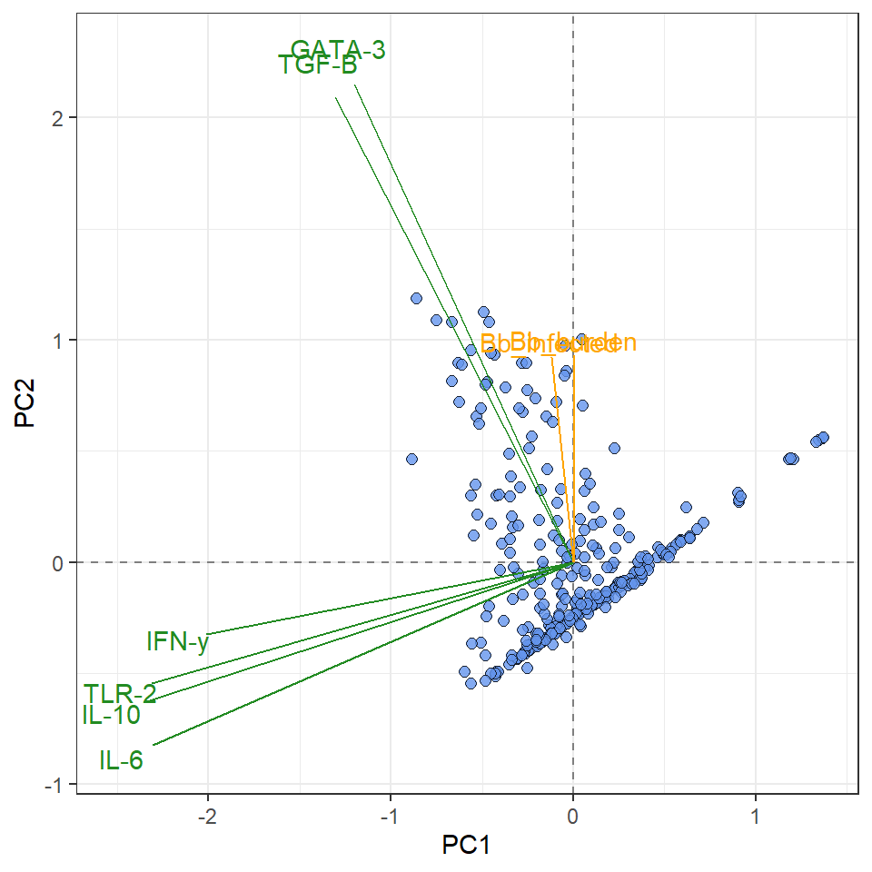
Figure 2: Genetic PCA
It appears that Bb infection status is significantly associated with our expression PCs, while burden is only marginally significant (based on permutation tests):
##
## ***VECTORS
##
## PC1 PC2 r2 Pr(>r)
## Bb_infected -0.129167 0.991620 0.0489 0.0009995 ***
## Bb_burden 0.007576 0.999970 0.0145 0.0979510 .
## ---
## Signif. codes: 0 '***' 0.001 '**' 0.01 '*' 0.05 '.' 0.1 ' ' 1
## Permutation: free
## Number of permutations: 2000And below are visualizations of the relationships between the individual PC axes and our Bb variables:

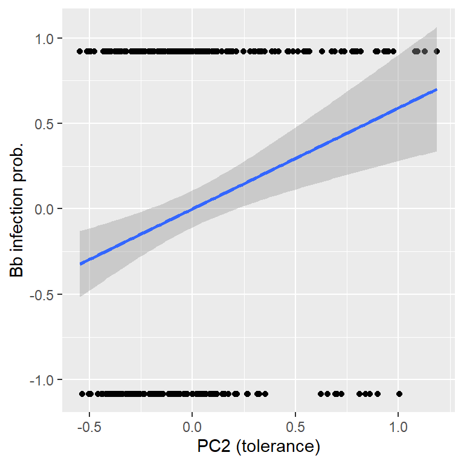

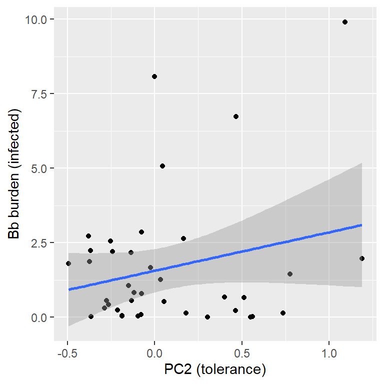
A multivariate regression of the Bb variables reveals that the significance that we saw before is almost entirely due to the tolerance axis (PC2):
## Response Bb_infected :
##
## Call:
## lm(formula = Bb_infected ~ PC1 + PC2, data = .)
##
## Residuals:
## Min 1Q Median 3Q Max
## -1.6733 -0.9726 0.3977 0.9742 1.1984
##
## Coefficients:
## Estimate Std. Error t value Pr(>|t|)
## (Intercept) -2.218e-16 5.504e-02 0.000 1.000
## PC1 -7.692e-02 1.484e-01 -0.518 0.605
## PC2 5.905e-01 1.484e-01 3.980 8.57e-05 ***
## ---
## Signif. codes: 0 '***' 0.001 '**' 0.01 '*' 0.05 '.' 0.1 ' ' 1
##
## Residual standard error: 0.9783 on 313 degrees of freedom
## Multiple R-squared: 0.04895, Adjusted R-squared: 0.04287
## F-statistic: 8.054 on 2 and 313 DF, p-value: 0.0003882
##
##
## Response Bb_burden :
##
## Call:
## lm(formula = Bb_burden ~ PC1 + PC2, data = .)
##
## Residuals:
## Min 1Q Median 3Q Max
## -0.6012 -0.2693 -0.1973 -0.1290 9.5398
##
## Coefficients:
## Estimate Std. Error t value Pr(>|t|)
## (Intercept) 6.571e-17 5.602e-02 0.000 1.0000
## PC1 2.453e-03 1.510e-01 0.016 0.9871
## PC2 3.237e-01 1.510e-01 2.143 0.0329 *
## ---
## Signif. codes: 0 '***' 0.001 '**' 0.01 '*' 0.05 '.' 0.1 ' ' 1
##
## Residual standard error: 0.9959 on 313 degrees of freedom
## Multiple R-squared: 0.01446, Adjusted R-squared: 0.008166
## F-statistic: 2.297 on 2 and 313 DF, p-value: 0.1023Note though, that the R-squared values are quite low.
0.3.2 Transformations
Because of the distribution of these genetic trait values, transformations are likely necessary such as the square-root transformation shown in the next figure, but we will also group these values by quartile and decile later on.
Square-root or log transforming the resistance variables does help their distributions a bit, though they are still not fully Guassian. Unfortunately, a lot of data is lost with log-transformations (due to zeros), especially among tolerance traits.
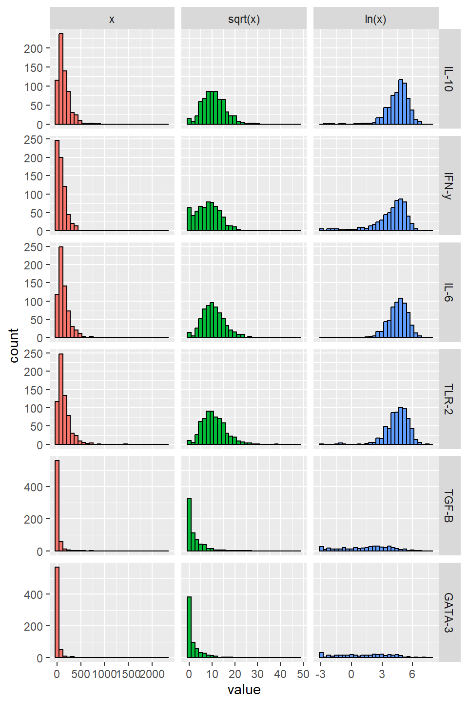
Figure 3: Genetic traits histogram, before and after transformations
0.4 B.b. variable distributions
Borrelia burden data are heavily zero-inflated, unsurprisingly, and there are about equal numbers of B.b. positive and negative individuals.
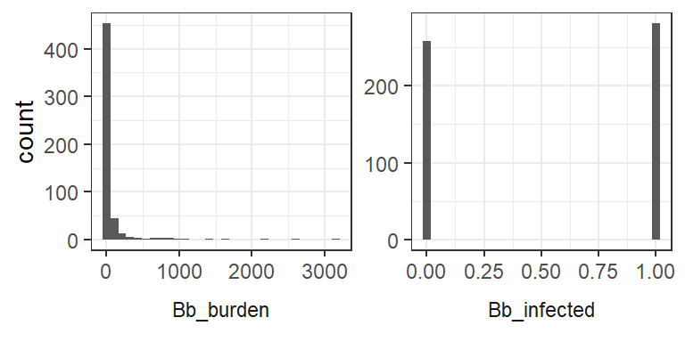
Figure 4: B.b. variable histograms
Similar to the genetic traits, square-root transforming the burden data helps with the skew. Log-transforming does an even better job, but can’t handle the zeros. This latter option is likely to be used with an infection hurdle model.
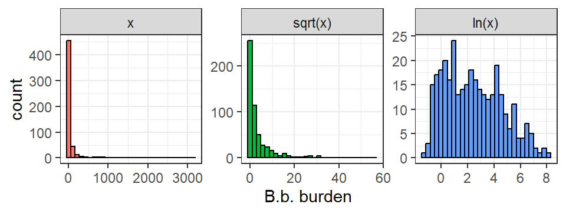
Figure 5: distribution of B.b. burden before and after transformations
0.5 Infection status modeling
Because of the zero-inflation of the B.b. burden data, we will look at the factors affecting B.b. in two parts (i.e., hurdle model). The first part is to look at the factors affecting the probability of being infected (binary) and the second part is to model the burden given that an individual is infected (i.e., zeros removed).
The figures below assess the relationships between the genetic traits and B.b. infection status.
The first shows that, there aren’t any strong patterns between the untransformed genetic traits and B.b. status. It also reveals that there are some rather extreme outliers among the genetic traits:
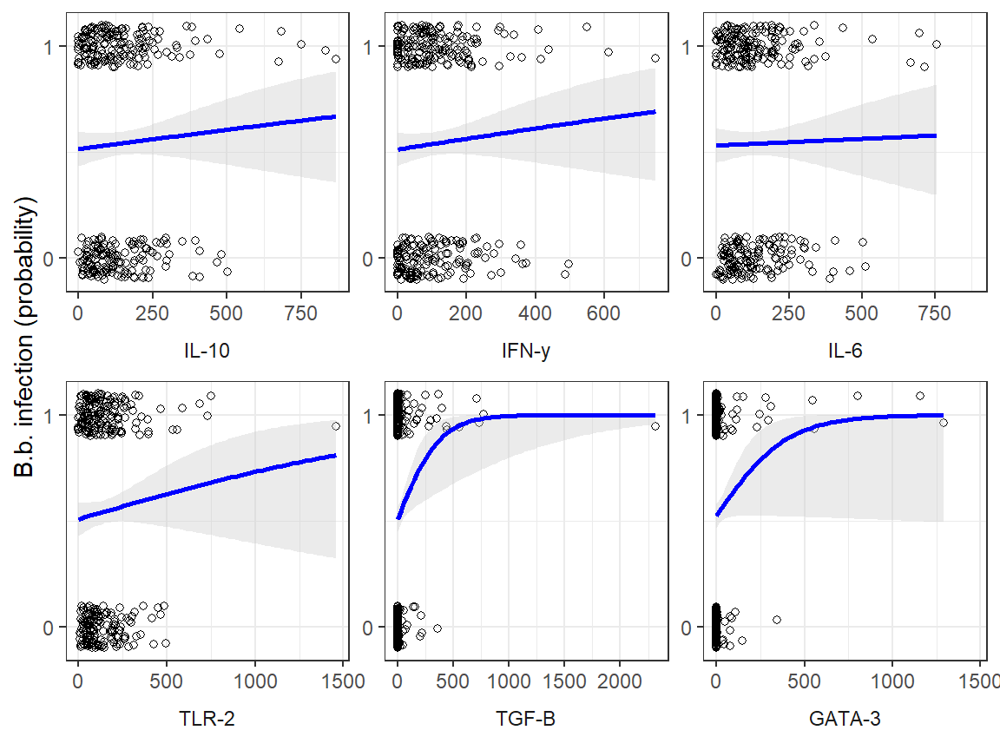
Figure 6: Relationships between genetic traits and B.b. infection
The next figure shows the relationship between the transformed variables and infection status, with the top 1% of the genetic trait values removed. Note that we log-transform the resistance traits and square-root-transform the tolerance traits. It appears that the transformed resistance traits are still not strongly associated with B.b. status (true for both transformations), but the transformed tolerance traits do appear to be positively associated with B.b. infection status.
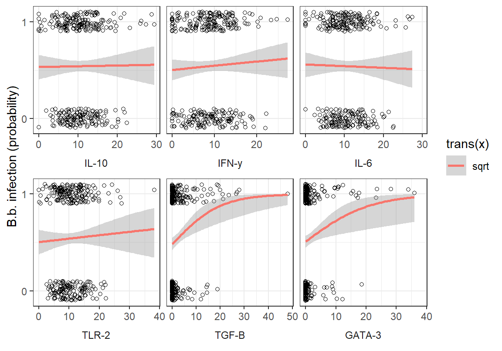
Figure 7: Relationships between sqrt-transformed genetic traits and B.b. infection
If we break the genetic traits into quartiles, we observe a slightly stronger patterns. Again, the strongest and clearest relationships are with the tolerance traits. Note that the blue points are mean proportion of infected individuals ± 95% confidence intervals for each quartile:

Figure 8: Relationships between genetic traits quartiles and B.b. infection
And the same patterns exist when we look at deciles:

Figure 9: Relationships between genetic traits deciles and B.b. infection
0.5.1 Statistical models
While most bivariate relationships are weak, the multivariate relationships may be more interesting. This section conducts multiple regression modeling of infection status from these 6 genetic traits.
Unfortunately, a generalized linear mixed effects (logistic regression) model using raw responses reveals that shows no significant effects (and very small effect sizes):
| Coef | SE | z | P | |
|---|---|---|---|---|
| (Intercept) | -0.022 | 0.708 | -0.031 | 0.975 |
IL-10 |
-0.002 | 0.005 | -0.514 | 0.607 |
IFN-y |
-0.005 | 0.003 | -1.858 | 0.063 |
IL-6 |
0.005 | 0.005 | 1.007 | 0.314 |
TGF-B |
0.002 | 0.004 | 0.366 | 0.714 |
GATA-3 |
0.004 | 0.006 | 0.663 | 0.507 |
square-root transforming the predictor variables does not improve the significance:
| Coef | SE | z | P | |
|---|---|---|---|---|
| (Intercept) | 0.193 | 0.738 | 0.262 | 0.794 |
sqrt_IL-10 |
-0.085 | 0.115 | -0.737 | 0.461 |
sqrt_IFN-y |
-0.097 | 0.052 | -1.879 | 0.060 |
sqrt_IL-6 |
0.123 | 0.122 | 1.005 | 0.315 |
sqrt_TGF-B |
0.067 | 0.100 | 0.674 | 0.500 |
sqrt_GATA-3 |
0.022 | 0.117 | 0.187 | 0.852 |
Nor does standardizing the predictor variables:
| Coef | SE | z | P | |
|---|---|---|---|---|
| (Intercept) | 0.015 | 0.695 | 0.022 | 0.983 |
scaled_IL-10 |
-0.286 | 0.555 | -0.516 | 0.606 |
scaled_IFN-y |
-0.493 | 0.265 | -1.864 | 0.062 |
scaled_IL-6 |
0.599 | 0.593 | 1.009 | 0.313 |
scaled_TGF-B |
0.189 | 0.520 | 0.362 | 0.717 |
scaled_GATA-3 |
0.445 | 0.677 | 0.658 | 0.510 |
However, if we exclude the top 5% of all the genetic traits, then the two tolerance variables (TGF-B and GATA-3) are significantly associated with B.b. infection. Probability of infection incraeses with increasing TGF-B expression and decreases with GATA-3, after accounting for the effects of the other variables:
| Coef | SE | z | P | |
|---|---|---|---|---|
| (Intercept) | 0.145 | 0.598 | 0.243 | 0.808 |
IL-10 |
-0.008 | 0.008 | -0.997 | 0.319 |
IFN-y |
-0.005 | 0.004 | -1.155 | 0.248 |
IL-6 |
0.009 | 0.008 | 1.108 | 0.268 |
TGF-B |
0.060 | 0.029 | 2.056 | 0.040 |
GATA-3 |
-0.111 | 0.051 | -2.183 | 0.029 |
The same is likely true for using quartiles/deciles, but I haven’t fit those models yet.
0.6 B.b. burden
TBD: Because the infection status did not seem to be associated with any of the genetic variables, I am going to hold off on running the second part of the analysis (\(P(\text{burden}|\text{infected})\)).
0.7 Weather
One important component of the SEMs will be a measure of climate. PCA allows us to take a series of climatic variables and simplify them to a single index variable that encompasses them. Here we include both the mean and coefficient of variation for temperature, precipitation, and relative humidity. We will also perform the PCA at three different scales: the site scale (average climate across 8 years), the annual scale (average climate within a single year at a site), and the month scale (average climate within a single month at a site).
Here is a quick look at the site-scale weather PCA, where PC1 explains 65% of the total variation and PC2 explains an additional 27%:
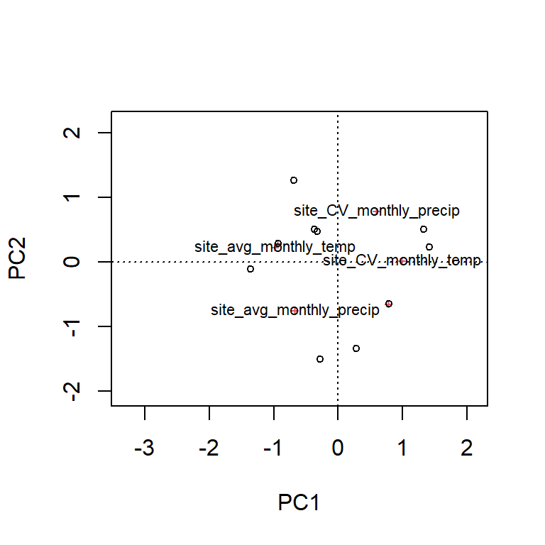
## Importance of components:
## PC1 PC2 PC3 PC4 PC5 PC6
## Eigenvalue 3.9152 1.6258 0.24984 0.1440 0.041644 0.023486
## Proportion Explained 0.6525 0.2710 0.04164 0.0240 0.006941 0.003914
## Cumulative Proportion 0.6525 0.9235 0.96514 0.9891 0.996086 1.000000Here is a breakdown of PC1 across the sites and the loadings of the different climate variables:
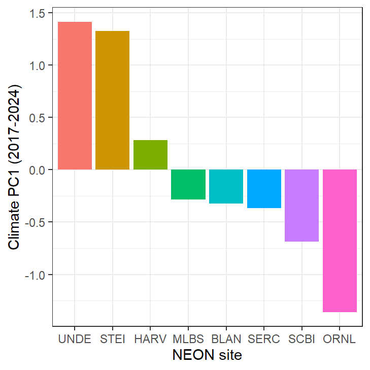
| variable | PC1 |
|---|---|
| site_CV_monthly_temp | 0.993 |
| site_avg_monthly_RH | 0.785 |
| site_CV_monthly_precip | 0.602 |
| site_avg_monthly_precip | -0.669 |
| site_CV_monthly_RH | -0.933 |
| site_avg_monthly_temp | -0.973 |
Because this site-scale PCA seems to place relative humidity and precipitation on opposite sides of the PC1 axis, so I’d like to visualize the relationship of these two variables with temperature. From this, we can see that at sites with the highest lowest average temperatures, average humidity and precipitation are less linked than at the sites with more middling average temperatures:
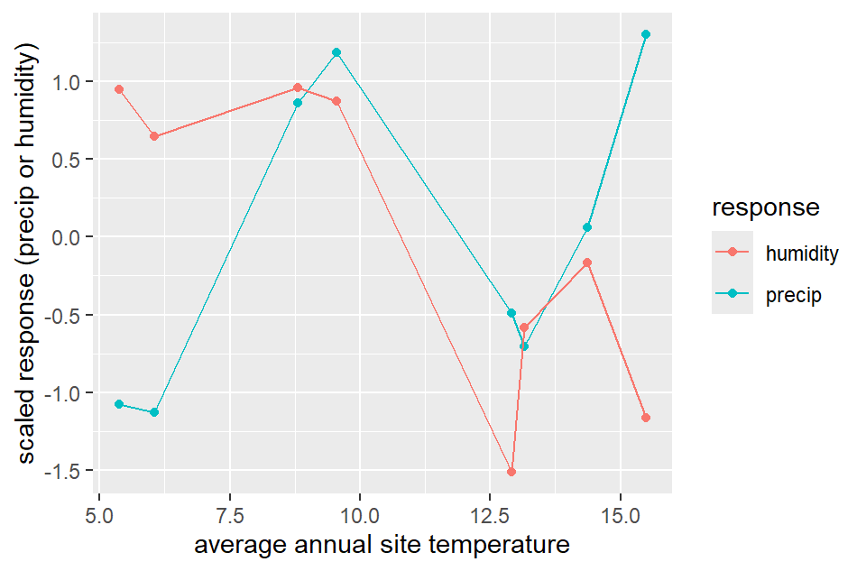
Here is the annual-scale PCA, where PC1 explains 48% of the variation and PC2 explains an additional 22%.
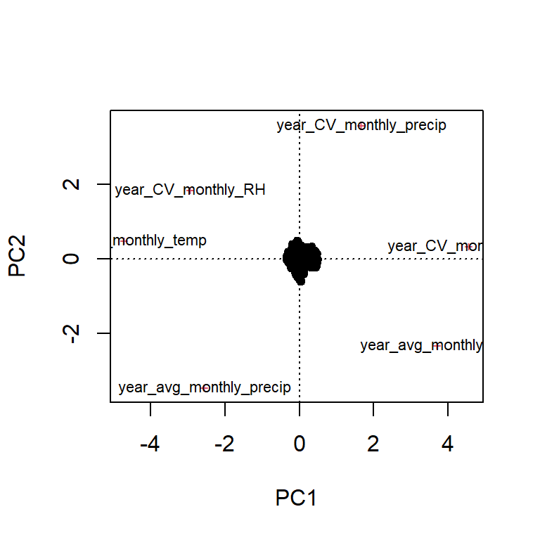
## Importance of components:
## PC1 PC2 PC3 PC4 PC5 PC6 PC7
## Eigenvalue 2.9341 1.4056 1.0296 0.68017 0.63612 0.24622 0.068206
## Proportion Explained 0.4192 0.2008 0.1471 0.09717 0.09087 0.03517 0.009744
## Cumulative Proportion 0.4192 0.6200 0.7670 0.86421 0.95508 0.99026 1.000000The monthly climate PCA (not visualized) further reduces the explanatory power of the PC axes with PC1 explaining only 30% of the climate variation and PC2 explaining an additional 24%:
## Importance of components:
## PC1 PC2 PC3 PC4 PC5 PC6
## Eigenvalue 1.8199 1.4637 1.0022 0.9744 0.5334 0.20644
## Proportion Explained 0.3033 0.2439 0.1670 0.1624 0.0889 0.03441
## Cumulative Proportion 0.3033 0.5473 0.7143 0.8767 0.9656 1.000000.8 Resistance/Tolerance PCA
Next, we will try to reduce the resistance and tolerance genetic expression variables into PCA axes, as we did with weather. In this case, we will fit separate PCAs for resistance (4 variables) and tolerance (2 variables) and will use the first PC axis as the index.
The resistance PC1 explains 77% of the variation among the (log-transformed) resistance variables, and is well correlated with those variables (only one shown):
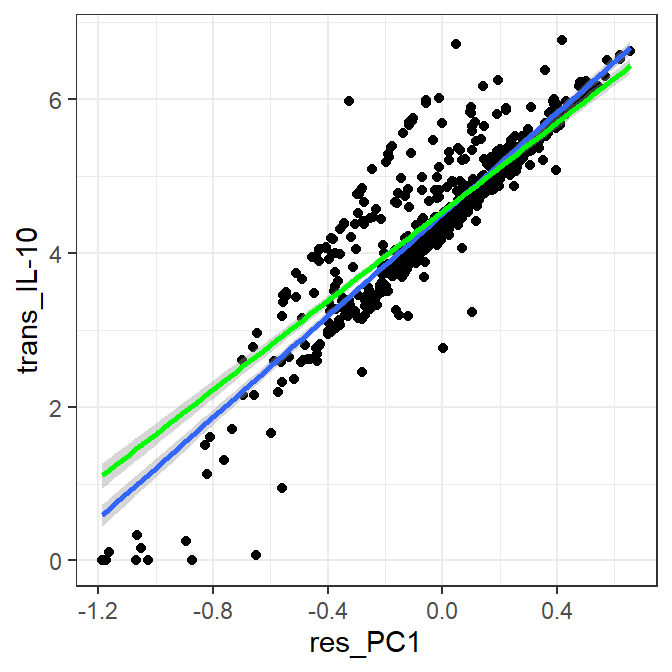
## PC1 PC2 PC3 PC4
## Eigenvalue 4.996 1.248 0.190 0.047
## Proportion Explained 0.771 0.193 0.029 0.007
## Cumulative Proportion 0.771 0.964 0.993 1.000The tolerance PC1 explains 97% of the variation in the two (log-transformed) tolerance variables:
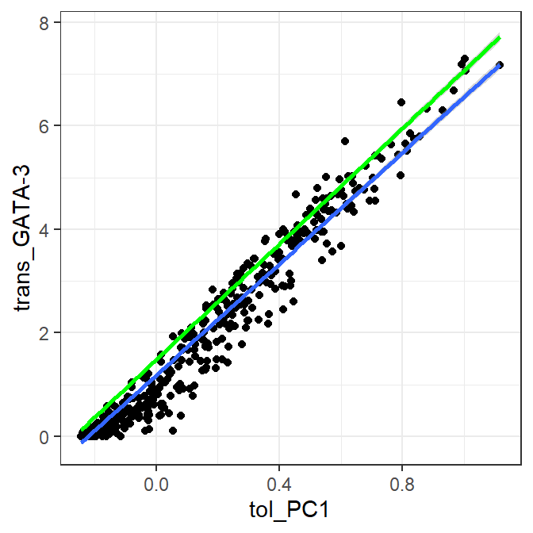
## PC1 PC2
## Eigenvalue 5.728 0.193
## Proportion Explained 0.967 0.033
## Cumulative Proportion 0.967 1.0000.9 SEMs:
In this section, we will look at SEMs that involve resistance and tolerance. Specifically, we are interested in resistance and tolerance as latent variables for tick attachment and Borrelia infection.
0.9.1 Tick attachment
First, we’ll build a model whose ultimate response variable is tick attachment. These models will include resistance and tolerance as predictors of tick attachment as well as factors that might predict resistance and tolerance. We will also try to incorporate mouse behavior (e.g., capture time) into these models.
0.9.1.1 model 1: Ticks, Resistance, Tolerance as terminal responses
The first model tries to replicate the model that Alli built, but adding an additional year of data. This model is not identical to the one Alli fit: rather than fitting the sub-models (lmer and glmer) to the individual scale (by summarizing variables across recaptures), we use fit to the individual observation scale (including individual ID as a random effect). This prevents the need to summarize and maximizes the available information (and power).
The results from this model indicate that there are some important paths missing from the model (the effect of sexual maturity on capture timing and the correlation between tolerance and resistance).
The results are somewhat interesting:
The probability (results on logit-link scale) of having a tick attached is associated with site level climate (P=0.003), capture time (P=0.4), and there is a significant interaction between sex and sexual maturity (P=0.4). Notably the main effects for sex and sexual maturity are not significant.
Capture time is affected by both sex and weight of the individual
Resistance is differs by year, sex, and weight
Tolerance differs only by year
##
## Structural Equation Model of fsem1
##
## Call:
## cap_prop_night ~ sex_male + weight
## ticks_attatched ~ siteClimatePC1 + cap_prop_night + sex_male * sex_mature
## res_PC1 ~ siteClimatePC1 * year + sex_mature + weight + sex_male
## tol_PC1 ~ weight + year + sex_male * cap_prop_night + ticks_attatched * sex_mature
##
## AIC
## 3373.749
##
## ---
## Tests of directed separation:
##
## Independ.Claim Test.Type DF Crit.Value P.Value
## ticks_attatched ~ weight + ... coef 2251.0000 -1.6031 0.1089
## cap_prop_night ~ siteClimatePC1 + ... coef 5.6451 -0.9770 0.3686
## tol_PC1 ~ siteClimatePC1 + ... coef 5.5842 -0.6237 0.5574
## cap_prop_night ~ sex_mature + ... coef 2588.7226 -0.8783 0.3799
## cap_prop_night ~ year + ... coef 1190.5254 -1.9963 0.0461 *
## ticks_attatched ~ year + ... coef 2304.0000 -1.6118 0.1070
## res_PC1 ~ cap_prop_night + ... coef 494.5574 -1.1990 0.2311
## res_PC1 ~ ticks_attatched + ... coef 259.2751 1.3856 0.1671
## tol_PC1 ~ res_PC1 + ... coef 391.2582 4.5609 0.0000 ***
##
## --
## Global goodness-of-fit:
##
## Chi-Squared = 152.663 with P-value = 0 and on 11 degrees of freedom
## Fisher's C = 50.457 with P-value = 0 and on 18 degrees of freedom
##
## ---
## Coefficients:
##
## Response Predictor Estimate Std.Error DF Crit.Value P.Value Std.Estimate
## cap_prop_night sex_male 0.0372 0.0105 940.3155 3.5486 0.0004 0.0716 ***
## cap_prop_night weight 0.0064 0.0011 1816.5215 5.9273 0.0000 0.1143 ***
## ticks_attatched siteClimatePC1 -1.0012 0.3348 2304.0000 -2.9900 0.0028 -0.4104 **
## ticks_attatched cap_prop_night -0.4329 0.2126 2304.0000 -2.0365 0.0417 -0.0499 *
## ticks_attatched sex_male 0.2832 0.2042 2304.0000 1.3867 0.1655 0.0628
## ticks_attatched sex_mature 0.0143 0.1861 2304.0000 0.0769 0.9387 0.0030
## ticks_attatched sex_male:sex_mature 0.5033 0.2434 2304.0000 2.0677 0.0387 0.0966 *
## res_PC1 siteClimatePC1 -68.7177 38.5405 520.6449 -1.7830 0.0752 -200.8454
## res_PC1 year -0.0590 0.0181 500.2229 -3.2686 0.0012 -0.5980 **
## res_PC1 sex_mature -0.0150 0.0290 512.4732 -0.5180 0.6047 -0.0226
## res_PC1 weight -0.0092 0.0029 517.3528 -3.1368 0.0018 -0.1355 **
## res_PC1 sex_male -0.0581 0.0265 496.5620 -2.1956 0.0286 -0.0919 *
## res_PC1 siteClimatePC1:year 0.0339 0.0191 520.6414 1.7809 0.0755 200.1919
## tol_PC1 weight -0.0002 0.0034 395.1550 -0.0639 0.9491 -0.0032
## tol_PC1 year -0.1235 0.0204 352.3238 -6.0638 0.0000 -1.2636 ***
## tol_PC1 sex_male -0.0308 0.0541 380.5016 -0.5697 0.5692 -0.0492
## tol_PC1 cap_prop_night -0.0862 0.0804 347.7756 -1.0718 0.2845 -0.0716
## tol_PC1 ticks_attatched 0.0971 0.0472 196.3667 2.0587 0.0408 0.1482 *
## tol_PC1 sex_mature 0.0411 0.0415 361.6524 0.9901 0.3228 0.0623
## tol_PC1 sex_male:cap_prop_night 0.0817 0.1108 382.7433 0.7377 0.4611 0.1285
## tol_PC1 ticks_attatched:sex_mature 0.0056 0.0603 335.5014 0.0931 0.9259 0.0087
##
## Signif. codes: 0 '***' 0.001 '**' 0.01 '*' 0.05
##
## ---
## Individual R-squared:
##
## Response method Marginal Conditional
## cap_prop_night none 0.02 0.15
## ticks_attatched theoretical 0.17 0.43
## res_PC1 none 0.08 0.86
## tol_PC1 none 0.11 0.81Below is a visualization of the sex-maturity interaction:
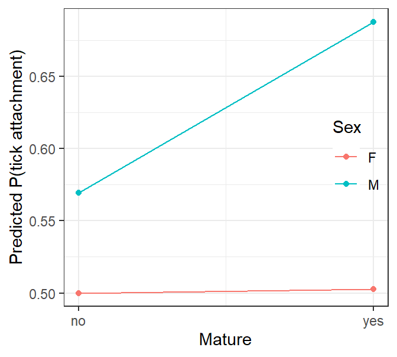
Next, we update the model to include the suggested missing components. Non-significant paths have not yet been removed.
##
## Structural Equation Model of fsem1.corr
##
## Call:
## cap_prop_night ~ sex_male + weight + year
## ticks_attatched ~ siteClimatePC1 + cap_prop_night + sex_male * sex_mature
## res_PC1 ~ siteClimatePC1 * year + sex_mature + weight + sex_male
## tol_PC1 ~ weight + year + sex_male + cap_prop_night + ticks_attatched + sex_mature + res_PC1 + sex_male:cap_prop_night + ticks_attatched:sex_mature
##
## AIC
## 3365.344
##
## ---
## Tests of directed separation:
##
## Independ.Claim Test.Type DF Crit.Value P.Value
## ticks_attatched ~ weight + ... coef 2251.0000 -1.6031 0.1089
## ticks_attatched ~ year + ... coef 2304.0000 -1.6118 0.1070
## cap_prop_night ~ siteClimatePC1 + ... coef 5.6032 -0.9579 0.3776
## tol_PC1 ~ siteClimatePC1 + ... coef 5.6103 -0.1472 0.8881
## cap_prop_night ~ sex_mature + ... coef 2623.8807 -0.5902 0.5551
## res_PC1 ~ cap_prop_night + ... coef 494.5470 -1.1990 0.2311
## res_PC1 ~ ticks_attatched + ... coef 259.2751 1.3856 0.1671
##
## --
## Global goodness-of-fit:
##
## Chi-Squared = 132.433 with P-value = 0 and on 8 degrees of freedom
## Fisher's C = 18.775 with P-value = 0.174 and on 14 degrees of freedom
##
## ---
## Coefficients:
##
## Response Predictor Estimate Std.Error DF Crit.Value P.Value Std.Estimate
## cap_prop_night sex_male 0.0363 0.0105 939.8650 3.4588 0.0006 0.0699 ***
## cap_prop_night weight 0.0063 0.0011 1827.5178 5.8356 0.0000 0.1126 ***
## cap_prop_night year -0.0129 0.0065 1196.8205 -1.9963 0.0461 -0.1590 *
## ticks_attatched siteClimatePC1 -1.0012 0.3348 2304.0000 -2.9900 0.0028 -0.4104 **
## ticks_attatched cap_prop_night -0.4329 0.2126 2304.0000 -2.0365 0.0417 -0.0499 *
## ticks_attatched sex_male 0.2832 0.2042 2304.0000 1.3867 0.1655 0.0628
## ticks_attatched sex_mature 0.0143 0.1861 2304.0000 0.0769 0.9387 0.0030
## ticks_attatched sex_male:sex_mature 0.5033 0.2434 2304.0000 2.0677 0.0387 0.0966 *
## res_PC1 siteClimatePC1 -68.7177 38.5405 520.6449 -1.7830 0.0752 -200.8454
## res_PC1 year -0.0590 0.0181 500.2229 -3.2686 0.0012 -0.5980 **
## res_PC1 sex_mature -0.0150 0.0290 512.4732 -0.5180 0.6047 -0.0226
## res_PC1 weight -0.0092 0.0029 517.3528 -3.1368 0.0018 -0.1355 **
## res_PC1 sex_male -0.0581 0.0265 496.5620 -2.1956 0.0286 -0.0919 *
## res_PC1 siteClimatePC1:year 0.0339 0.0191 520.6414 1.7809 0.0755 200.1919
## tol_PC1 weight 0.0027 0.0034 394.1629 0.8072 0.4200 0.0405
## tol_PC1 year -0.1060 0.0201 365.5738 -5.2688 0.0000 -1.0845 ***
## tol_PC1 sex_male 0.0021 0.0534 393.1621 0.0399 0.9682 0.0034
## tol_PC1 cap_prop_night -0.0576 0.0801 392.4234 -0.7199 0.4720 -0.0479
## tol_PC1 ticks_attatched 0.0906 0.0458 141.2717 1.9792 0.0497 0.1383 *
## tol_PC1 sex_mature 0.0538 0.0408 386.2409 1.3190 0.1880 0.0816
## tol_PC1 res_PC1 0.2360 0.0519 391.1720 4.5455 0.0000 0.2384 ***
## tol_PC1 sex_male:cap_prop_night 0.0489 0.1094 391.1126 0.4472 0.6550 0.0769
## tol_PC1 ticks_attatched:sex_mature -0.0056 0.0591 329.8346 -0.0952 0.9242 -0.0087
##
## Signif. codes: 0 '***' 0.001 '**' 0.01 '*' 0.05
##
## ---
## Individual R-squared:
##
## Response method Marginal Conditional
## cap_prop_night none 0.02 0.16
## ticks_attatched theoretical 0.17 0.43
## res_PC1 none 0.08 0.86
## tol_PC1 none 0.14 0.85Here’s a visualization of the model (significant paths only):
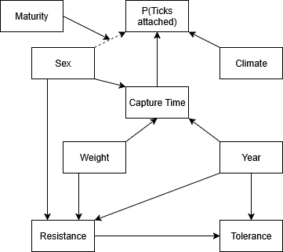
There are a few problems with this model, from my perspective:
There are some missing links that seem obvious (i.e., the effect of climate on behavior).
Year is treated as a numeric variable, which expects a constant trend through time. This assumption is not reasonable. Better approaches would be to either
- include year as a random effect (note the lack of an interaction with year) or 2) conduct a group comparison, whereby the model is parameter differently for each year and testing which paths differ among years.
The resistance and tolerance variables have a directed relationship. It is more appropriate to specify that these variables are adirectionally correlated. I tried fitting the model with this specification multiple times and it would not successfully fit.
There are no significant links between ticks and resistance or tolerance, rather it is a model of the common factors that affect ticks, resistance, and tolerance. This is not completely uninteresting, but it does seem like there should be a direct link.
0.9.1.2 model 2:
0.9.1.2.1 Capture timing
## Linear mixed model fit by REML. t-tests use Satterthwaite's method ['lmerModLmerTest']
## Formula: cap_prop_night ~ sex_male * sex_mature + weight + siteClimatePC1 +
## RH + temp_mean + temp_min + precip + (1 | siteID) + (1 | tagID) + (1 | year)
## Data: Peros
##
## REML criterion at convergence: 355.9
##
## Scaled residuals:
## Min 1Q Median 3Q Max
## -2.9068 -0.7529 -0.2575 0.6936 3.6489
##
## Random effects:
## Groups Name Variance Std.Dev.
## tagID (Intercept) 0.0058062 0.07620
## siteID (Intercept) 0.0047136 0.06866
## year (Intercept) 0.0003905 0.01976
## Residual 0.0586038 0.24208
## Number of obs: 2865, groups: tagID, 1298; siteID, 8; year, 3
##
## Fixed effects:
## Estimate Std. Error df t value Pr(>|t|)
## (Intercept) 3.644e-01 6.261e-02 1.593e+02 5.820 3.14e-08 ***
## sex_male 6.921e-03 1.809e-02 1.831e+03 0.383 0.7020
## sex_mature -2.793e-02 1.766e-02 1.333e+03 -1.581 0.1141
## weight 6.194e-03 1.162e-03 1.890e+03 5.329 1.10e-07 ***
## siteClimatePC1 -2.124e-02 2.802e-02 5.692e+00 -0.758 0.4787
## RH -1.073e-03 5.116e-04 2.691e+03 -2.097 0.0361 *
## temp_mean -9.978e-03 3.946e-03 2.749e+03 -2.529 0.0115 *
## temp_min 8.822e-03 4.025e-03 2.743e+03 2.192 0.0285 *
## precip 2.832e-04 6.729e-04 2.810e+03 0.421 0.6739
## sex_male:sex_mature 4.643e-02 2.254e-02 1.704e+03 2.060 0.0395 *
## ---
## Signif. codes: 0 '***' 0.001 '**' 0.01 '*' 0.05 '.' 0.1 ' ' 1
##
## Correlation of Fixed Effects:
## (Intr) sex_ml sx_mtr weight stCPC1 RH temp_men temp_min precip
## sex_male -0.180
## sex_mature -0.065 0.698
## weight -0.376 0.028 -0.164
## siteClmtPC1 0.014 -0.011 -0.006 0.014
## RH -0.687 -0.068 -0.133 0.020 -0.062
## temp_mean -0.590 -0.003 -0.046 -0.027 -0.023 0.532
## temp_min 0.515 0.022 0.065 0.052 0.041 -0.573 -0.960
## precip 0.140 0.024 0.034 -0.102 0.027 -0.292 0.064 -0.038
## sx_ml:sx_mt 0.182 -0.806 -0.765 -0.076 0.018 0.052 0.005 -0.040 -0.004## Linear mixed model fit by REML. t-tests use Satterthwaite's method ['lmerModLmerTest']
## Formula: cap_prop_night ~ sex_male + sex_mature + weight + RH + temp_mean +
## temp_min + (1 | siteID) + (1 | tagID) + (1 | year) + sex_male:sex_mature
## Data: Peros
##
## REML criterion at convergence: 338.5
##
## Scaled residuals:
## Min 1Q Median 3Q Max
## -2.8850 -0.7522 -0.2592 0.6980 3.6833
##
## Random effects:
## Groups Name Variance Std.Dev.
## tagID (Intercept) 0.0057834 0.07605
## siteID (Intercept) 0.0043260 0.06577
## year (Intercept) 0.0003857 0.01964
## Residual 0.0586074 0.24209
## Number of obs: 2865, groups: tagID, 1298; siteID, 8; year, 3
##
## Fixed effects:
## Estimate Std. Error df t value Pr(>|t|)
## (Intercept) 3.609e-01 6.156e-02 1.855e+02 5.862 2.05e-08 ***
## sex_male 6.503e-03 1.807e-02 1.833e+03 0.360 0.7190
## sex_mature -2.832e-02 1.765e-02 1.335e+03 -1.605 0.1088
## weight 6.256e-03 1.156e-03 1.898e+03 5.413 6.97e-08 ***
## RH -1.030e-03 4.882e-04 2.599e+03 -2.110 0.0349 *
## temp_mean -1.011e-02 3.934e-03 2.733e+03 -2.570 0.0102 *
## temp_min 8.968e-03 4.017e-03 2.703e+03 2.233 0.0257 *
## sex_male:sex_mature 4.686e-02 2.253e-02 1.697e+03 2.080 0.0377 *
## ---
## Signif. codes: 0 '***' 0.001 '**' 0.01 '*' 0.05 '.' 0.1 ' ' 1
##
## Correlation of Fixed Effects:
## (Intr) sex_ml sx_mtr weight RH temp_men temp_min
## sex_male -0.186
## sex_mature -0.071 0.697
## weight -0.370 0.030 -0.161
## RH -0.687 -0.064 -0.129 -0.009
## temp_mean -0.610 -0.005 -0.048 -0.020 0.576
## temp_min 0.529 0.023 0.066 0.048 -0.611 -0.960
## sx_ml:sx_mt 0.185 -0.806 -0.765 -0.077 0.054 0.006 -0.0400.9.1.2.2 Tick attachement, by relative humidity
The below model of larval tick attachment suggests that relative humidity is a key factor (in year, individual, and site) in larval tick attachment. Again, the interaction between sex and sexual maturity. Weight and the interaction between capture timing are marginally significant:
## Generalized linear mixed model fit by maximum likelihood (Laplace Approximation) ['glmerMod']
## Family: binomial ( logit )
## Formula: larvalTicksAttached ~ cap_prop_night * RH + sex_male * sex_mature +
## weight + precip + temp_min + (1 | siteID) + (1 | tagID) + (1 | year)
## Data: Peros
##
## AIC BIC logLik -2*log(L) df.resid
## 2322.0 2396.4 -1148.0 2296.0 2237
##
## Scaled residuals:
## Min 1Q Median 3Q Max
## -1.9488 -0.5990 -0.2395 0.6346 5.0394
##
## Random effects:
## Groups Name Variance Std.Dev.
## tagID (Intercept) 0.75090 0.8665
## siteID (Intercept) 1.67962 1.2960
## year (Intercept) 0.06907 0.2628
## Number of obs: 2250, groups: tagID, 1023; siteID, 8; year, 3
##
## Fixed effects:
## Estimate Std. Error z value Pr(>|z|)
## (Intercept) -3.552596 0.833287 -4.263 2.01e-05 ***
## cap_prop_night 1.659194 1.233159 1.345 0.1785
## RH 0.018712 0.007466 2.506 0.0122 *
## sex_male 0.169387 0.221371 0.765 0.4442
## sex_mature 0.133881 0.212738 0.629 0.5291
## weight -0.007541 0.015528 -0.486 0.6272
## precip -0.014199 0.006797 -2.089 0.0367 *
## temp_min 0.080448 0.013566 5.930 3.03e-09 ***
## cap_prop_night:RH -0.027106 0.015328 -1.768 0.0770 .
## sex_male:sex_mature 0.398104 0.271254 1.468 0.1422
## ---
## Signif. codes: 0 '***' 0.001 '**' 0.01 '*' 0.05 '.' 0.1 ' ' 1
##
## Correlation of Fixed Effects:
## (Intr) cp_pr_ RH sex_ml sx_mtr weight precip tmp_mn c__:RH
## cp_prp_nght -0.497
## RH -0.623 0.715
## sex_male -0.141 -0.025 -0.057
## sex_mature -0.071 -0.011 -0.097 0.662
## weight -0.337 -0.076 -0.051 -0.021 -0.181
## precip 0.179 -0.029 -0.294 0.053 0.073 -0.097
## temp_min -0.243 0.014 -0.122 0.063 0.085 0.144 0.079
## cp_prp_n:RH 0.491 -0.983 -0.728 0.025 0.018 0.063 0.032 -0.006
## sx_ml:sx_mt 0.140 0.044 0.068 -0.803 -0.768 -0.047 -0.043 -0.107 -0.054
## optimizer (Nelder_Mead) convergence code: 0 (OK)
## Model failed to converge with max|grad| = 0.0593994 (tol = 0.002, component 1)After removing weight and the interaction between capture time and humidity, we get a model that suggests that capture time, humidity, and the interaction between sex and sexual maturity are important drivers of larval tick attachment:
## Generalized linear mixed model fit by maximum likelihood (Laplace Approximation) ['glmerMod']
## Family: binomial ( logit )
## Formula: larvalTicksAttached ~ cap_prop_night + RH + sex_male + sex_mature +
## precip + temp_min + (1 | siteID) + (1 | tagID) + (1 | year)
## Data: Peros
##
## AIC BIC logLik -2*log(L) df.resid
## 2377.6 2435.0 -1178.8 2357.6 2293
##
## Scaled residuals:
## Min 1Q Median 3Q Max
## -2.2151 -0.5993 -0.2437 0.6284 5.2774
##
## Random effects:
## Groups Name Variance Std.Dev.
## tagID (Intercept) 0.70090 0.8372
## siteID (Intercept) 1.62116 1.2732
## year (Intercept) 0.07806 0.2794
## Number of obs: 2303, groups: tagID, 1035; siteID, 8; year, 3
##
## Fixed effects:
## Estimate Std. Error z value Pr(>|z|)
## (Intercept) -3.268397 0.635928 -5.140 2.75e-07 ***
## cap_prop_night -0.461032 0.220401 -2.092 0.03646 *
## RH 0.010593 0.004906 2.159 0.03085 *
## sex_male 0.401429 0.128481 3.124 0.00178 **
## sex_mature 0.353665 0.125999 2.807 0.00500 **
## precip -0.014524 0.005579 -2.603 0.00923 **
## temp_min 0.082166 0.013133 6.256 3.94e-10 ***
## ---
## Signif. codes: 0 '***' 0.001 '**' 0.01 '*' 0.05 '.' 0.1 ' ' 1
##
## Correlation of Fixed Effects:
## (Intr) cp_pr_ RH sex_ml sx_mtr precip
## cp_prp_nght -0.121
## RH -0.507 -0.011
## sex_male -0.088 -0.080 -0.037
## sex_mature -0.062 -0.027 -0.157 0.096
## precip 0.180 -0.021 -0.384 0.012 0.011
## temp_min -0.238 0.042 -0.161 -0.029 0.053 0.068## Generalized linear mixed model fit by maximum likelihood (Laplace Approximation) ['glmerMod']
## Family: binomial ( logit )
## Formula: larvalTicksAttached ~ cap_prop_night + RH + sex_male + sex_mature +
## precip + temp_min + (1 | siteID) + (1 | tagID) + (1 | year) + siteClimatePC1
## Data: Peros
##
## AIC BIC logLik -2*log(L) df.resid
## 2372.6 2435.7 -1175.3 2350.6 2292
##
## Scaled residuals:
## Min 1Q Median 3Q Max
## -2.2076 -0.6038 -0.2388 0.6295 5.3724
##
## Random effects:
## Groups Name Variance Std.Dev.
## tagID (Intercept) 0.69906 0.8361
## siteID (Intercept) 0.61031 0.7812
## year (Intercept) 0.07221 0.2687
## Number of obs: 2303, groups: tagID, 1035; siteID, 8; year, 3
##
## Fixed effects:
## Estimate Std. Error z value Pr(>|z|)
## (Intercept) -3.277720 0.524809 -6.246 4.22e-10 ***
## cap_prop_night -0.469348 0.220525 -2.128 0.033310 *
## RH 0.010794 0.004897 2.204 0.027508 *
## sex_male 0.402407 0.128575 3.130 0.001750 **
## sex_mature 0.352391 0.126070 2.795 0.005187 **
## precip -0.014556 0.005577 -2.610 0.009048 **
## temp_min 0.081230 0.013122 6.190 6.01e-10 ***
## siteClimatePC1 -1.108753 0.323977 -3.422 0.000621 ***
## ---
## Signif. codes: 0 '***' 0.001 '**' 0.01 '*' 0.05 '.' 0.1 ' ' 1
##
## Correlation of Fixed Effects:
## (Intr) cp_pr_ RH sex_ml sx_mtr precip tmp_mn
## cp_prp_nght -0.145
## RH -0.615 -0.012
## sex_male -0.106 -0.080 -0.037
## sex_mature -0.075 -0.027 -0.157 0.096
## precip 0.218 -0.021 -0.384 0.012 0.011
## temp_min -0.289 0.042 -0.162 -0.029 0.053 0.069
## siteClmtPC1 0.025 0.021 -0.044 -0.004 0.007 0.024 0.044
## optimizer (Nelder_Mead) convergence code: 0 (OK)
## Model failed to converge with max|grad| = 0.00682204 (tol = 0.002, component 1)However, it seems like only relative humidity matters for nymphal ticks:
## Generalized linear mixed model fit by maximum likelihood (Laplace Approximation) ['glmerMod']
## Family: binomial ( logit )
## Formula: nymphalTicksAttached ~ cap_prop_night + RH + sex_male * sex_mature +
## precip + temp_min + (1 | siteID) + (1 | tagID) + (1 | year)
## Data: Peros
##
## AIC BIC logLik -2*log(L) df.resid
## 1092.1 1155.3 -535.1 1070.1 2291
##
## Scaled residuals:
## Min 1Q Median 3Q Max
## -0.7051 -0.2676 -0.2158 -0.1689 6.7535
##
## Random effects:
## Groups Name Variance Std.Dev.
## tagID (Intercept) 0.9971 0.9985
## siteID (Intercept) 0.1922 0.4384
## year (Intercept) 0.1263 0.3553
## Number of obs: 2302, groups: tagID, 1035; siteID, 8; year, 3
##
## Fixed effects:
## Estimate Std. Error z value Pr(>|z|)
## (Intercept) -2.467168 0.698450 -3.532 0.000412 ***
## cap_prop_night 0.501677 0.349535 1.435 0.151211
## RH -0.014478 0.008046 -1.799 0.071956 .
## sex_male 0.407360 0.352742 1.155 0.248157
## sex_mature 0.094648 0.349505 0.271 0.786540
## precip -0.010947 0.010876 -1.007 0.314166
## temp_min -0.015464 0.020488 -0.755 0.450385
## sex_male:sex_mature 0.268303 0.435296 0.616 0.537652
## ---
## Signif. codes: 0 '***' 0.001 '**' 0.01 '*' 0.05 '.' 0.1 ' ' 1
##
## Correlation of Fixed Effects:
## (Intr) cp_pr_ RH sex_ml sx_mtr precip tmp_mn
## cp_prp_nght -0.233
## RH -0.647 0.024
## sex_male -0.317 -0.011 -0.077
## sex_mature -0.288 0.010 -0.132 0.676
## precip 0.215 -0.049 -0.367 0.047 0.025
## temp_min -0.216 0.040 -0.270 0.068 0.111 0.099
## sx_ml:sx_mt 0.313 -0.036 0.039 -0.808 -0.810 -0.040 -0.140
## optimizer (Nelder_Mead) convergence code: 0 (OK)
## Model failed to converge with max|grad| = 0.0182243 (tol = 0.002, component 1)A simplified model contains capture timing and relative humidity:
## Generalized linear mixed model fit by maximum likelihood (Laplace Approximation) ['glmerMod']
## Family: binomial ( logit )
## Formula: nymphalTicksAttached ~ cap_prop_night + RH + (1 | siteID) + (1 | tagID) + (1 | year)
## Data: Peros
##
## AIC BIC logLik -2*log(L) df.resid
## 1093.2 1127.7 -540.6 1081.2 2297
##
## Scaled residuals:
## Min 1Q Median 3Q Max
## -0.7005 -0.2630 -0.2187 -0.1770 5.4092
##
## Random effects:
## Groups Name Variance Std.Dev.
## tagID (Intercept) 1.127 1.0617
## siteID (Intercept) 0.177 0.4207
## year (Intercept) 0.102 0.3194
## Number of obs: 2303, groups: tagID, 1035; siteID, 8; year, 3
##
## Fixed effects:
## Estimate Std. Error z value Pr(>|z|)
## (Intercept) -2.297603 0.615050 -3.736 0.000187 ***
## cap_prop_night 0.583610 0.348305 1.676 0.093822 .
## RH -0.016028 0.007015 -2.285 0.022331 *
## ---
## Signif. codes: 0 '***' 0.001 '**' 0.01 '*' 0.05 '.' 0.1 ' ' 1
##
## Correlation of Fixed Effects:
## (Intr) cp_pr_
## cp_prp_nght -0.245
## RH -0.821 0.011One important factor may be seasonality. Probability of nymphal tick attachment decreases relatively steadily and slowly throughout the season whereas larval ticks have two peaks (once in March-April and again July-September):
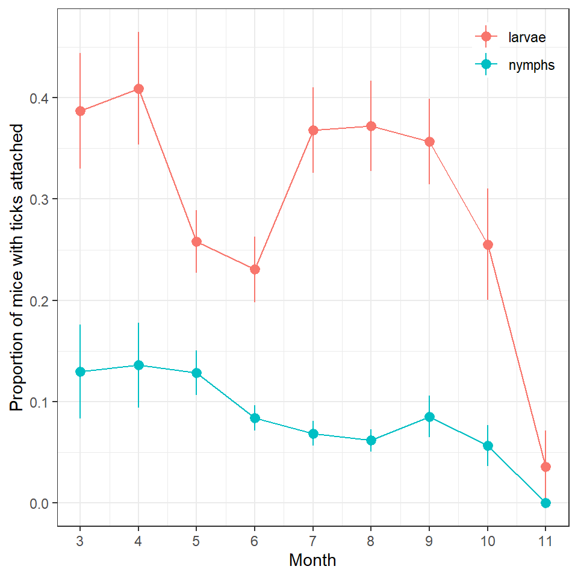
0.9.1.2.3 Resistance
## Linear mixed model fit by REML. t-tests use Satterthwaite's method ['lmerModLmerTest']
## Formula: res_PC1 ~ siteClimatePC1 + sex_mature + weight + sex_male + larvalTicksAttached +
## nymphalTicksAttached + Bb_infected + (1 | year) + (1 | siteID) + (1 | tagID)
## Data: Peros
##
## REML criterion at convergence: 108.6
##
## Scaled residuals:
## Min 1Q Median 3Q Max
## -0.0247159 -0.0041371 0.0001143 0.0049155 0.0164793
##
## Random effects:
## Groups Name Variance Std.Dev.
## tagID (Intercept) 7.723e-02 0.27790
## siteID (Intercept) 3.015e-02 0.17363
## year (Intercept) 1.126e-03 0.03356
## Residual 4.451e-06 0.00211
## Number of obs: 227, groups: tagID, 226; siteID, 8; year, 2
##
## Fixed effects:
## Estimate Std. Error df t value Pr(>|t|)
## (Intercept) 0.195249 0.112288 31.619744 1.739 0.0918 .
## siteClimatePC1 -0.115364 0.074641 6.497572 -1.546 0.1694
## sex_mature -0.037753 0.046035 213.856428 -0.820 0.4131
## weight -0.006915 0.004923 215.251038 -1.405 0.1616
## sex_male -0.090515 0.039667 186.105929 -2.282 0.0236 *
## larvalTicksAttached -0.026385 0.035858 215.620037 -0.736 0.4626
## nymphalTicksAttached 0.056499 0.067464 216.452682 0.837 0.4033
## Bb_infected -0.079319 0.041180 166.757284 -1.926 0.0558 .
## ---
## Signif. codes: 0 '***' 0.001 '**' 0.01 '*' 0.05 '.' 0.1 ' ' 1
##
## Correlation of Fixed Effects:
## (Intr) stCPC1 sx_mtr weight sex_ml lrvlTA nympTA
## siteClmtPC1 -0.007
## sex_mature -0.011 0.007
## weight -0.670 0.019 -0.357
## sex_male -0.069 0.000 0.486 -0.263
## lrvlTcksAtt -0.283 0.057 0.065 0.118 0.206
## nymphlTcksA -0.088 -0.001 -0.111 0.086 -0.057 0.134
## Bb_infected 0.071 0.081 -0.139 -0.234 -0.253 0.057 -0.021## Linear mixed model fit by REML. t-tests use Satterthwaite's method ['lmerModLmerTest']
## Formula: res_PC1 ~ sex_mature + sex_male + Bb_infected + (1 | year) + (1 | siteID) + (1 | tagID)
## Data: Peros
##
## REML criterion at convergence: 127.2
##
## Scaled residuals:
## Min 1Q Median 3Q Max
## -0.0151751 -0.0022940 0.0002331 0.0030205 0.0093223
##
## Random effects:
## Groups Name Variance Std.Dev.
## tagID (Intercept) 8.23e-02 0.286884
## siteID (Intercept) 3.42e-02 0.184931
## year (Intercept) 0.00e+00 0.000000
## Residual 1.53e-06 0.001237
## Number of obs: 283, groups: tagID, 282; siteID, 8; year, 2
##
## Fixed effects:
## Estimate Std. Error df t value Pr(>|t|)
## (Intercept) 0.09646 0.07879 11.37656 1.224 0.2456
## sex_mature -0.06882 0.03976 273.27597 -1.731 0.0846 .
## sex_male -0.07558 0.03500 276.21408 -2.160 0.0317 *
## Bb_infected -0.09308 0.03646 278.51349 -2.553 0.0112 *
## ---
## Signif. codes: 0 '***' 0.001 '**' 0.01 '*' 0.05 '.' 0.1 ' ' 1
##
## Correlation of Fixed Effects:
## (Intr) sx_mtr sex_ml
## sex_mature -0.345
## sex_male -0.316 0.452
## Bb_infected -0.115 -0.249 -0.293
## optimizer (nloptwrap) convergence code: 0 (OK)
## boundary (singular) fit: see help('isSingular')if we exclude infection status (to prevent SEM recursion), climate, weight, and sex are important drivers of resistance:
## Linear mixed model fit by REML. t-tests use Satterthwaite's method ['lmerModLmerTest']
## Formula: res_PC1 ~ siteClimatePC1 + sex_mature + weight + sex_male + larvalTicksAttached +
## nymphalTicksAttached + (1 | year) + (1 | siteID) + (1 | tagID)
## Data: Peros
##
## REML criterion at convergence: 166.7
##
## Scaled residuals:
## Min 1Q Median 3Q Max
## -1.26015 -0.17139 0.02981 0.22148 0.71954
##
## Random effects:
## Groups Name Variance Std.Dev.
## tagID (Intercept) 0.068796 0.26229
## siteID (Intercept) 0.011824 0.10874
## year (Intercept) 0.008735 0.09346
## Residual 0.008454 0.09194
## Number of obs: 421, groups: tagID, 419; siteID, 8; year, 3
##
## Fixed effects:
## Estimate Std. Error df t value Pr(>|t|)
## (Intercept) 0.216428 0.091807 12.413665 2.357 0.03558 *
## siteClimatePC1 -0.113425 0.046436 6.150417 -2.443 0.04931 *
## sex_mature -0.022868 0.031261 393.164438 -0.732 0.46490
## weight -0.010156 0.003187 408.704105 -3.187 0.00155 **
## sex_male -0.072362 0.028069 318.363497 -2.578 0.01039 *
## larvalTicksAttached 0.019917 0.030390 183.148262 0.655 0.51304
## nymphalTicksAttached 0.067527 0.052951 411.015710 1.275 0.20294
## ---
## Signif. codes: 0 '***' 0.001 '**' 0.01 '*' 0.05 '.' 0.1 ' ' 1
##
## Correlation of Fixed Effects:
## (Intr) stCPC1 sx_mtr weight sex_ml lrvlTA
## siteClmtPC1 -0.018
## sex_mature 0.044 0.011
## weight -0.600 0.005 -0.404
## sex_male -0.147 0.009 0.258 -0.088
## lrvlTcksAtt -0.155 0.098 0.008 0.067 -0.032
## nymphlTcksA -0.006 -0.010 -0.091 -0.010 -0.109 0.0440.9.1.2.4 Tolerance
## Linear mixed model fit by REML. t-tests use Satterthwaite's method ['lmerModLmerTest']
## Formula: tol_PC1 ~ siteClimatePC1 + sex_mature + weight + sex_male + larvalTicksAttached +
## nymphalTicksAttached + (1 | year) + (1 | siteID) + (1 | tagID)
## Data: Peros
##
## REML criterion at convergence: 177.5
##
## Scaled residuals:
## Min 1Q Median 3Q Max
## -1.4057 -0.2920 -0.1462 0.2606 2.1043
##
## Random effects:
## Groups Name Variance Std.Dev.
## tagID (Intercept) 0.05712 0.2390
## siteID (Intercept) 0.01176 0.1085
## year (Intercept) 0.03040 0.1744
## Residual 0.02156 0.1468
## Number of obs: 422, groups: tagID, 419; siteID, 8; year, 3
##
## Fixed effects:
## Estimate Std. Error df t value Pr(>|t|)
## (Intercept) -3.105e-02 1.254e-01 4.545e+00 -0.248 0.8152
## siteClimatePC1 -4.395e-02 4.643e-02 5.454e+00 -0.946 0.3839
## sex_mature 5.062e-02 3.169e-02 4.065e+02 1.597 0.1110
## weight -8.569e-04 3.220e-03 4.116e+02 -0.266 0.7903
## sex_male 2.975e-02 2.874e-02 3.920e+02 1.035 0.3013
## larvalTicksAttached 4.747e-02 3.159e-02 3.279e+02 1.503 0.1339
## nymphalTicksAttached 9.079e-02 5.347e-02 4.102e+02 1.698 0.0903 .
## ---
## Signif. codes: 0 '***' 0.001 '**' 0.01 '*' 0.05 '.' 0.1 ' ' 1
##
## Correlation of Fixed Effects:
## (Intr) stCPC1 sx_mtr weight sex_ml lrvlTA
## siteClmtPC1 -0.013
## sex_mature 0.032 0.009
## weight -0.444 0.004 -0.401
## sex_male -0.115 0.006 0.259 -0.073
## lrvlTcksAtt -0.099 0.101 -0.012 0.045 -0.067
## nymphlTcksA -0.003 -0.010 -0.092 -0.012 -0.114 0.051## Linear mixed model fit by REML. t-tests use Satterthwaite's method ['lmerModLmerTest']
## Formula: tol_PC1 ~ weight + larvalTicksAttached + nymphalTicksAttached +
## (1 | year) + (1 | siteID) + (1 | tagID)
## Data: Peros
##
## REML criterion at convergence: 167.5
##
## Scaled residuals:
## Min 1Q Median 3Q Max
## -1.5090 -0.3078 -0.1692 0.2659 2.2780
##
## Random effects:
## Groups Name Variance Std.Dev.
## tagID (Intercept) 0.05428 0.2330
## siteID (Intercept) 0.01124 0.1060
## year (Intercept) 0.02851 0.1688
## Residual 0.02468 0.1571
## Number of obs: 423, groups: tagID, 420; siteID, 8; year, 3
##
## Fixed effects:
## Estimate Std. Error df t value Pr(>|t|)
## (Intercept) -0.031820 0.121503 4.536000 -0.262 0.8049
## weight 0.001297 0.002953 399.305813 0.439 0.6609
## larvalTicksAttached 0.056990 0.031327 358.295639 1.819 0.0697 .
## nymphalTicksAttached 0.101013 0.053095 412.206347 1.902 0.0578 .
## ---
## Signif. codes: 0 '***' 0.001 '**' 0.01 '*' 0.05 '.' 0.1 ' ' 1
##
## Correlation of Fixed Effects:
## (Intr) weight lrvlTA
## weight -0.482
## lrvlTcksAtt -0.107 0.039
## nymphlTcksA -0.013 -0.050 0.0470.9.1.2.5 Borrelia infection (USF method)
The infection status of an individual
## Generalized linear mixed model fit by maximum likelihood (Laplace Approximation) ['glmerMod']
## Family: binomial ( logit )
## Formula: Bb_infected ~ siteClimatePC1 + cap_prop_night + res_PC1 + tol_PC1 +
## weight + sex_male + sex_mature + larvalTicksAttached + nymphalTicksAttached +
## (1 | siteID) + (1 | tagID) + (1 | year)
## Data: Peros
##
## AIC BIC logLik -2*log(L) df.resid
## 256.0 299.9 -115.0 230.0 203
##
## Scaled residuals:
## Min 1Q Median 3Q Max
## -3.1280 -0.7587 0.3502 0.6057 2.8663
##
## Random effects:
## Groups Name Variance Std.Dev.
## tagID (Intercept) 3.872e-06 0.001968
## siteID (Intercept) 2.821e-01 0.531087
## year (Intercept) 3.750e-01 0.612383
## Number of obs: 216, groups: tagID, 215; siteID, 8; year, 2
##
## Fixed effects:
## Estimate Std. Error z value Pr(>|z|)
## (Intercept) -2.23377 1.04056 -2.147 0.0318 *
## siteClimatePC1 -0.54008 0.34555 -1.563 0.1181
## cap_prop_night -0.24487 0.65684 -0.373 0.7093
## res_PC1 -0.51269 0.59559 -0.861 0.3893
## tol_PC1 1.07979 0.70762 1.526 0.1270
## weight 0.08746 0.04397 1.989 0.0467 *
## sex_male 0.50573 0.39949 1.266 0.2055
## sex_mature 0.77036 0.40313 1.911 0.0560 .
## larvalTicksAttached 0.77902 0.37588 2.073 0.0382 *
## nymphalTicksAttached 0.81756 0.73110 1.118 0.2635
## ---
## Signif. codes: 0 '***' 0.001 '**' 0.01 '*' 0.05 '.' 0.1 ' ' 1
##
## Correlation of Fixed Effects:
## (Intr) stCPC1 cp_pr_ rs_PC1 tl_PC1 weight sex_ml sx_mtr lrvlTA
## siteClmtPC1 0.038
## cp_prp_nght -0.219 0.026
## res_PC1 -0.068 0.189 -0.026
## tol_PC1 0.082 0.009 0.008 -0.112
## weight -0.732 -0.008 -0.030 0.073 0.007
## sex_male -0.209 0.041 -0.079 0.102 0.056 -0.100
## sex_mature -0.085 0.018 -0.112 0.056 -0.080 -0.274 0.485
## lrvlTcksAtt -0.193 0.132 0.149 0.074 -0.060 0.018 -0.017 0.074
## nymphlTcksA -0.054 -0.041 -0.008 -0.035 0.008 0.054 -0.052 -0.057 0.033
## optimizer (Nelder_Mead) convergence code: 0 (OK)
## Model failed to converge with max|grad| = 0.0038731 (tol = 0.002, component 1)## Generalized linear mixed model fit by maximum likelihood (Laplace Approximation) ['glmerMod']
## Family: binomial ( logit )
## Formula: Bb_infected ~ res_PC1 + tol_PC1 + weight + larvalTicksAttached +
## nymphalTicksAttached + (1 | siteID) + (1 | tagID) + (1 | year)
## Data: Peros
##
## AIC BIC logLik -2*log(L) df.resid
## 259.0 289.8 -120.5 241.0 218
##
## Scaled residuals:
## Min 1Q Median 3Q Max
## -4.0916 -0.6969 0.3495 0.5659 2.2043
##
## Random effects:
## Groups Name Variance Std.Dev.
## tagID (Intercept) 7.661e-09 8.752e-05
## siteID (Intercept) 5.703e-01 7.552e-01
## year (Intercept) 3.838e-01 6.195e-01
## Number of obs: 227, groups: tagID, 226; siteID, 8; year, 2
##
## Fixed effects:
## Estimate Std. Error z value Pr(>|z|)
## (Intercept) -2.10770 0.99629 -2.116 0.03438 *
## res_PC1 -0.74069 0.56693 -1.306 0.19139
## tol_PC1 1.19753 0.69752 1.717 0.08601 .
## weight 0.11758 0.04201 2.799 0.00513 **
## larvalTicksAttached 0.82558 0.36729 2.248 0.02459 *
## nymphalTicksAttached 0.75698 0.71381 1.060 0.28892
## ---
## Signif. codes: 0 '***' 0.001 '**' 0.01 '*' 0.05 '.' 0.1 ' ' 1
##
## Correlation of Fixed Effects:
## (Intr) rs_PC1 tl_PC1 weight lrvlTA
## res_PC1 -0.035
## tol_PC1 0.077 -0.125
## weight -0.813 0.080 0.006
## lrvlTcksAtt -0.142 0.059 -0.045 0.016
## nymphlTcksA -0.083 -0.036 -0.017 0.051 0.043
## optimizer (Nelder_Mead) convergence code: 0 (OK)
## boundary (singular) fit: see help('isSingular')This model can likely be improved by combining both methods of detecting infection status (i.e., USF and NEON PCR), with method included as a covariate.
0.9.1.2.6 Borrelia load (USF method)
There does not seem to be any significant effects on Borrelia burden, except a marginal efffect of tolerance:
## Linear mixed model fit by REML. t-tests use Satterthwaite's method ['lmerModLmerTest']
## Formula: Bb_burden ~ siteClimatePC1 + res_PC1 + tol_PC1 + weight + sex_male +
## sex_mature + larvalTicksAttached + nymphalTicksAttached + (1 | siteID) + (1 | tagID) + (1 | year)
## Data: Peros
##
## REML criterion at convergence: 3218.1
##
## Scaled residuals:
## Min 1Q Median 3Q Max
## -0.0023708 -0.0010128 -0.0006777 -0.0002040 0.0251559
##
## Random effects:
## Groups Name Variance Std.Dev.
## tagID (Intercept) 1.278e+05 357.5549
## siteID (Intercept) 0.000e+00 0.0000
## year (Intercept) 1.707e-01 0.4132
## Residual 1.245e+00 1.1158
## Number of obs: 227, groups: tagID, 226; siteID, 8; year, 2
##
## Fixed effects:
## Estimate Std. Error df t value Pr(>|t|)
## (Intercept) 118.9557 113.7396 215.2269 1.046 0.2968
## siteClimatePC1 -23.1761 35.5545 217.8398 -0.652 0.5152
## res_PC1 -81.6235 75.8919 217.9360 -1.076 0.2833
## tol_PC1 130.8842 78.3514 217.9944 1.670 0.0963 .
## weight -0.4573 6.1221 215.0344 -0.075 0.9405
## sex_male -3.5742 43.3784 214.3161 -0.082 0.9344
## sex_mature 33.2175 57.9427 217.9558 0.573 0.5670
## larvalTicksAttached -51.2337 36.3743 208.9840 -1.409 0.1605
## nymphalTicksAttached -63.5624 84.4556 217.9927 -0.753 0.4525
## ---
## Signif. codes: 0 '***' 0.001 '**' 0.01 '*' 0.05 '.' 0.1 ' ' 1
##
## Correlation of Fixed Effects:
## (Intr) stCPC1 rs_PC1 tl_PC1 weight sex_ml sx_mtr lrvlTA
## siteClmtPC1 -0.107
## res_PC1 -0.252 0.096
## tol_PC1 0.069 0.111 -0.277
## weight -0.847 0.136 0.159 0.022
## sex_male -0.067 0.221 0.358 -0.078 -0.341
## sex_mature -0.029 0.058 0.121 -0.131 -0.385 0.457
## lrvlTcksAtt -0.431 -0.070 -0.218 0.081 0.104 0.627 0.178
## nymphlTcksA -0.124 -0.041 -0.144 -0.066 0.086 -0.062 -0.119 0.102
## optimizer (nloptwrap) convergence code: 0 (OK)
## boundary (singular) fit: see help('isSingular')removing some reasonable variables leaves us with a (non-converging) model that suggests that larval ticks and tolerance might have some influence on burden:
## Linear mixed model fit by REML. t-tests use Satterthwaite's method ['lmerModLmerTest']
## Formula: Bb_burden ~ res_PC1 + tol_PC1 + larvalTicksAttached + (1 | siteID) + (1 | tagID) + (1 | year)
## Data: Peros
##
## REML criterion at convergence: 3364.6
##
## Scaled residuals:
## Min 1Q Median 3Q Max
## -0.0087862 -0.0008413 -0.0005886 -0.0002529 0.0210409
##
## Random effects:
## Groups Name Variance Std.Dev.
## tagID (Intercept) 1.253e+05 353.9574
## siteID (Intercept) 0.000e+00 0.0000
## year (Intercept) 0.000e+00 0.0000
## Residual 8.164e-01 0.9036
## Number of obs: 234, groups: tagID, 233; siteID, 8; year, 2
##
## Fixed effects:
## Estimate Std. Error df t value Pr(>|t|)
## (Intercept) 132.04 24.38 223.98 5.415 1.57e-07 ***
## res_PC1 -89.38 64.88 227.11 -1.378 0.1697
## tol_PC1 136.25 75.49 229.99 1.805 0.0724 .
## larvalTicksAttached -51.59 22.35 92.97 -2.308 0.0232 *
## ---
## Signif. codes: 0 '***' 0.001 '**' 0.01 '*' 0.05 '.' 0.1 ' ' 1
##
## Correlation of Fixed Effects:
## (Intr) rs_PC1 tl_PC1
## res_PC1 0.281
## tol_PC1 0.040 -0.291
## lrvlTcksAtt -0.282 -0.998 0.291
## optimizer (nloptwrap) convergence code: -4 (NLOPT_ROUNDOFF_LIMITED: Roundoff errors led to a breakdown of the optimization algorithm. In this case, the returned minimum may still be useful. (e.g. this error occurs in NEWUOA if one tries to achieve a tolerance too close to machine precision.))
## boundary (singular) fit: see help('isSingular')but those effects don’t seem to have any impact beyond infection status:
## Linear mixed model fit by REML. t-tests use Satterthwaite's method ['lmerModLmerTest']
## Formula: Bb_burden ~ res_PC1 + tol_PC1 + larvalTicksAttached + (1 | siteID) +
## (1 | tagID) + (1 | year) + Bb_infected
## Data: Peros
##
## REML criterion at convergence: 3348.4
##
## Scaled residuals:
## Min 1Q Median 3Q Max
## -0.61816 -0.10326 -0.05404 -0.00288 2.24568
##
## Random effects:
## Groups Name Variance Std.Dev.
## tagID (Intercept) 112540 335.47
## siteID (Intercept) 0 0.00
## year (Intercept) 0 0.00
## Residual 8714 93.35
## Number of obs: 234, groups: tagID, 233; siteID, 8; year, 2
##
## Fixed effects:
## Estimate Std. Error df t value Pr(>|t|)
## (Intercept) 31.64 42.83 211.70 0.739 0.461
## res_PC1 -51.13 72.62 205.34 -0.704 0.482
## tol_PC1 85.94 76.38 228.62 1.125 0.262
## larvalTicksAttached -38.39 44.56 30.49 -0.862 0.396
## Bb_infected 136.60 47.07 29.10 2.902 0.007 **
## ---
## Signif. codes: 0 '***' 0.001 '**' 0.01 '*' 0.05 '.' 0.1 ' ' 1
##
## Correlation of Fixed Effects:
## (Intr) rs_PC1 tl_PC1 lrvlTA
## res_PC1 -0.104
## tol_PC1 0.215 -0.318
## lrvlTcksAtt -0.354 -0.031 0.059
## Bb_infected -0.749 0.103 -0.210 -0.042
## optimizer (nloptwrap) convergence code: 0 (OK)
## boundary (singular) fit: see help('isSingular')## Linear mixed model fit by REML. t-tests use Satterthwaite's method ['lmerModLmerTest']
## Formula: Bb_burden ~ res_PC1 + tol_PC1 + (1 | siteID) + (1 | tagID) + (1 | year) + Bb_infected
## Data: Peros
##
## REML criterion at convergence: 4020
##
## Scaled residuals:
## Min 1Q Median 3Q Max
## -0.57820 -0.04982 -0.02128 -0.00106 1.23123
##
## Random effects:
## Groups Name Variance Std.Dev.
## tagID (Intercept) 99171 314.91
## siteID (Intercept) 0 0.00
## year (Intercept) 0 0.00
## Residual 1777 42.15
## Number of obs: 283, groups: tagID, 282; siteID, 8; year, 2
##
## Fixed effects:
## Estimate Std. Error df t value Pr(>|t|)
## (Intercept) 20.034 28.201 28.586 0.710 0.48321
## res_PC1 -32.029 59.380 119.980 -0.539 0.59062
## tol_PC1 75.757 64.078 278.001 1.182 0.23811
## Bb_infected 119.162 33.573 7.329 3.549 0.00867 **
## ---
## Signif. codes: 0 '***' 0.001 '**' 0.01 '*' 0.05 '.' 0.1 ' ' 1
##
## Correlation of Fixed Effects:
## (Intr) rs_PC1 tl_PC1
## res_PC1 -0.213
## tol_PC1 0.240 -0.327
## Bb_infected -0.735 0.224 -0.195
## optimizer (nloptwrap) convergence code: 0 (OK)
## boundary (singular) fit: see help('isSingular')0.9.1.2.7 SEM
0.9.1.2.7.1 Using all the data
This first model uses all the data but does not take into account the correlations between resistance and tolerance nor between larval tick attachment and nymphal tick attachment
##
## Structural Equation Model of infect_psem
##
## Call:
## Bb_infected ~ res_PC1 + tol_PC1 + weight + larvalTicksAttached + nymphalTicksAttached
## cap_prop_night ~ sex_male + sex_mature + weight + RH + temp_mean + temp_min + sex_male:sex_mature
## res_PC1 ~ siteClimatePC1 + sex_mature + weight + sex_male + larvalTicksAttached + nymphalTicksAttached
## tol_PC1 ~ weight + larvalTicksAttached + nymphalTicksAttached
## larvalTicksAttached ~ cap_prop_night + RH + sex_male + sex_mature + precip + temp_min
## nymphalTicksAttached ~ cap_prop_night + RH
##
## AIC
## 4464.572
##
## ---
## Tests of directed separation:
##
## Independ.Claim Test.Type DF Crit.Value P.Value
## larvalTicksAttached ~ weight + ... coef 2250.0000 -0.2920 0.7703
## nymphalTicksAttached ~ weight + ... coef 2250.0000 0.3805 0.7036
## Bb_infected ~ sex_male + ... coef 227.0000 0.4017 0.6879
## nymphalTicksAttached ~ sex_male + ... coef 2302.0000 2.6958 0.0070 **
## tol_PC1 ~ sex_male + ... coef 397.5105 0.6445 0.5196
## Bb_infected ~ sex_mature + ... coef 227.0000 1.3493 0.1772
## nymphalTicksAttached ~ sex_mature + ... coef 2303.0000 1.0639 0.2874
## tol_PC1 ~ sex_mature + ... coef 410.0926 1.2761 0.2026
## Bb_infected ~ RH + ... coef 227.0000 0.1330 0.8942
## res_PC1 ~ RH + ... coef 412.8877 2.1771 0.0300 *
## tol_PC1 ~ RH + ... coef 415.6124 1.4173 0.1571
## Bb_infected ~ temp_mean + ... coef 227.0000 2.5842 0.0098 **
## res_PC1 ~ temp_mean + ... coef 412.2160 -2.7782 0.0057 **
## larvalTicksAttached ~ temp_mean + ... coef 2303.0000 531.3620 0.0000 ***
## nymphalTicksAttached ~ temp_mean + ... coef 2303.0000 -0.9692 0.3325
## tol_PC1 ~ temp_mean + ... coef 416.1392 -0.5197 0.6035
## Bb_infected ~ temp_min + ... coef 227.0000 2.6791 0.0074 **
## res_PC1 ~ temp_min + ... coef 410.3959 -2.1009 0.0363 *
## nymphalTicksAttached ~ temp_min + ... coef 2303.0000 -0.4315 0.6661
## tol_PC1 ~ temp_min + ... coef 415.8922 -0.5159 0.6062
## Bb_infected ~ siteClimatePC1 + ... coef 227.0000 -1.5890 0.1121
## larvalTicksAttached ~ siteClimatePC1 + ... coef 2303.0000 -3.4228 0.0006 ***
## nymphalTicksAttached ~ siteClimatePC1 + ... coef 2303.0000 -0.0955 0.9239
## cap_prop_night ~ siteClimatePC1 + ... coef 5.6895 -0.7683 0.4730
## tol_PC1 ~ siteClimatePC1 + ... coef 5.3739 -0.9202 0.3969
## Bb_infected ~ precip + ... coef 227.0000 -1.1359 0.2560
## res_PC1 ~ precip + ... coef 104.7062 2.8251 0.0057 **
## nymphalTicksAttached ~ precip + ... coef 2303.0000 -0.9845 0.3249
## cap_prop_night ~ precip + ... coef 2807.4833 0.4466 0.6552
## tol_PC1 ~ precip + ... coef 130.4642 -0.1634 0.8705
## cap_prop_night ~ Bb_infected + ... coef 93.1613 0.1786 0.8586
## cap_prop_night ~ res_PC1 + ... coef 336.9400 -0.9153 0.3607
## tol_PC1 ~ res_PC1 + ... coef 391.7851 4.3509 0.0000 ***
## nymphalTicksAttached ~ larvalTicksAttached + ... coef 2301.0000 -1.6386 0.1013
## tol_PC1 ~ cap_prop_night + ... coef 372.8645 -1.6333 0.1032
##
## --
## Global goodness-of-fit:
##
## Chi-Squared = 362.599 with P-value = 0 and on 39 degrees of freedom
## Fisher's C = 238.943 with P-value = 0 and on 70 degrees of freedom
##
## ---
## Coefficients:
##
## Response Predictor Estimate Std.Error DF Crit.Value P.Value Std.Estimate
## Bb_infected res_PC1 -0.7407 0.5669 227.0000 -1.3065 0.1914 -0.1076
## Bb_infected tol_PC1 1.1975 0.6975 227.0000 1.7168 0.0860 0.1722
## Bb_infected weight 0.1176 0.0420 227.0000 2.7990 0.0051 0.2506 **
## Bb_infected larvalTicksAttached 0.8256 0.3673 227.0000 2.2477 0.0246 0.1754 *
## Bb_infected nymphalTicksAttached 0.7570 0.7138 227.0000 1.0605 0.2889 0.0921
## cap_prop_night sex_male 0.0065 0.0181 1833.4263 0.3598 0.7190 0.0125
## cap_prop_night sex_mature -0.0283 0.0176 1334.9767 -1.6047 0.1088 -0.0517
## cap_prop_night weight 0.0063 0.0012 1898.2532 5.4135 0.0000 0.1117 ***
## cap_prop_night RH -0.0010 0.0005 2599.2075 -2.1101 0.0349 -0.0493 *
## cap_prop_night temp_mean -0.0101 0.0039 2733.0495 -2.5695 0.0102 -0.1883 *
## cap_prop_night temp_min 0.0090 0.0040 2702.8731 2.2327 0.0257 0.1721 *
## cap_prop_night sex_male:sex_mature 0.0469 0.0225 1696.8074 2.0803 0.0377 0.0780 *
## res_PC1 siteClimatePC1 -0.1134 0.0464 6.1504 -2.4426 0.0493 -0.3315 *
## res_PC1 sex_mature -0.0229 0.0313 393.1644 -0.7315 0.4649 -0.0343
## res_PC1 weight -0.0102 0.0032 408.7041 -3.1867 0.0015 -0.1490 **
## res_PC1 sex_male -0.0724 0.0281 318.3635 -2.5780 0.0104 -0.1145 *
## res_PC1 larvalTicksAttached 0.0199 0.0304 183.1483 0.6554 0.5130 0.0291
## res_PC1 nymphalTicksAttached 0.0675 0.0530 411.0157 1.2753 0.2029 0.0566
## tol_PC1 weight 0.0013 0.0030 399.3058 0.4390 0.6609 0.0192
## tol_PC1 larvalTicksAttached 0.0570 0.0313 358.2956 1.8192 0.0697 0.0842
## tol_PC1 nymphalTicksAttached 0.1010 0.0531 412.2063 1.9025 0.0578 0.0855
## larvalTicksAttached cap_prop_night -0.4610 0.2204 2303.0000 -2.0918 0.0365 -0.0506 *
## larvalTicksAttached RH 0.0106 0.0049 2303.0000 2.1590 0.0308 0.0557 *
## larvalTicksAttached sex_male 0.4014 0.1285 2303.0000 3.1244 0.0018 0.0849 **
## larvalTicksAttached sex_mature 0.3537 0.1260 2303.0000 2.8069 0.0050 0.0709 **
## larvalTicksAttached precip -0.0145 0.0056 2303.0000 -2.6034 0.0092 -0.0520 **
## larvalTicksAttached temp_min 0.0822 0.0131 2303.0000 6.2565 0.0000 0.1732 ***
## nymphalTicksAttached cap_prop_night 0.5836 0.3483 2303.0000 1.6756 0.0938 0.0784
## nymphalTicksAttached RH -0.0160 0.0070 2303.0000 -2.2847 0.0223 -0.1030 *
##
## Signif. codes: 0 '***' 0.001 '**' 0.01 '*' 0.05
##
## ---
## Individual R-squared:
##
## Response method Marginal Conditional
## Bb_infected theoretical 0.13 0.32
## cap_prop_night none 0.02 0.17
## res_PC1 none 0.13 0.92
## tol_PC1 none 0.01 0.79
## larvalTicksAttached theoretical 0.06 0.45
## nymphalTicksAttached theoretical 0.02 0.31## Response Predictor Estimate Std.Error DF Crit.Value P.Value Std.Estimate Var.9
## 1 Bb_infected tol_PC1 1.1975 0.6975 227.0000 1.7168 0.0860 0.1722
## 2 Bb_infected weight 0.1176 0.0420 227.0000 2.7990 0.0051 0.2506 **
## 3 Bb_infected larvalTicksAttached 0.8256 0.3673 227.0000 2.2477 0.0246 0.1754 *
## 4 cap_prop_night weight 0.0063 0.0012 1898.2532 5.4135 0.0000 0.1117 ***
## 5 cap_prop_night RH -0.0010 0.0005 2599.2075 -2.1101 0.0349 -0.0493 *
## 6 cap_prop_night temp_mean -0.0101 0.0039 2733.0495 -2.5695 0.0102 -0.1883 *
## 7 cap_prop_night temp_min 0.0090 0.0040 2702.8731 2.2327 0.0257 0.1721 *
## 8 cap_prop_night sex_male:sex_mature 0.0469 0.0225 1696.8074 2.0803 0.0377 0.0780 *
## 9 res_PC1 siteClimatePC1 -0.1134 0.0464 6.1504 -2.4426 0.0493 -0.3315 *
## 10 res_PC1 weight -0.0102 0.0032 408.7041 -3.1867 0.0015 -0.1490 **
## 11 res_PC1 sex_male -0.0724 0.0281 318.3635 -2.5780 0.0104 -0.1145 *
## 12 tol_PC1 larvalTicksAttached 0.0570 0.0313 358.2956 1.8192 0.0697 0.0842
## 13 tol_PC1 nymphalTicksAttached 0.1010 0.0531 412.2063 1.9025 0.0578 0.0855
## 14 larvalTicksAttached cap_prop_night -0.4610 0.2204 2303.0000 -2.0918 0.0365 -0.0506 *
## 15 larvalTicksAttached RH 0.0106 0.0049 2303.0000 2.1590 0.0308 0.0557 *
## 16 larvalTicksAttached sex_male 0.4014 0.1285 2303.0000 3.1244 0.0018 0.0849 **
## 17 larvalTicksAttached sex_mature 0.3537 0.1260 2303.0000 2.8069 0.0050 0.0709 **
## 18 larvalTicksAttached precip -0.0145 0.0056 2303.0000 -2.6034 0.0092 -0.0520 **
## 19 larvalTicksAttached temp_min 0.0822 0.0131 2303.0000 6.2565 0.0000 0.1732 ***
## 20 nymphalTicksAttached cap_prop_night 0.5836 0.3483 2303.0000 1.6756 0.0938 0.0784
## 21 nymphalTicksAttached RH -0.0160 0.0070 2303.0000 -2.2847 0.0223 -0.1030 *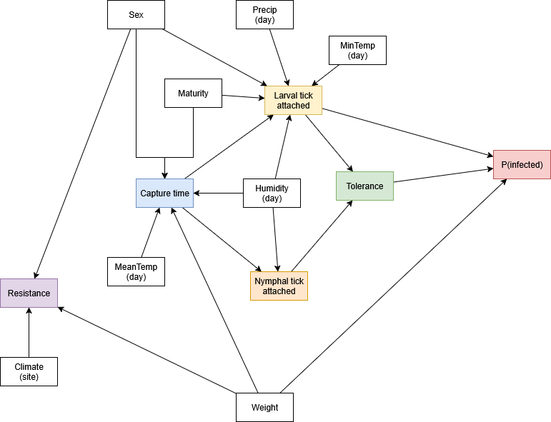
The goodness of fit test indicates that this model is a poor fit to our data (P<0.05) so, we’ll try to add the suggested paths that make biological sense first, but doing so still leads to a poor overall fit:
##
## Structural Equation Model of infect_psem3
##
## Call:
## Bb_infected ~ res_PC1 + tol_PC1 + weight + larvalTicksAttached + nymphalTicksAttached + temp_mean + temp_min
## cap_prop_night ~ sex_male + sex_mature + weight + RH + temp_mean + temp_min + sex_male:sex_mature
## res_PC1 ~ siteClimatePC1 + sex_mature + weight + sex_male + larvalTicksAttached + nymphalTicksAttached + RH + temp_mean + temp_min + precip
## tol_PC1 ~ weight + larvalTicksAttached + nymphalTicksAttached + res_PC1
## larvalTicksAttached ~ cap_prop_night + RH + sex_male + sex_mature + precip + temp_min + nymphalTicksAttached + temp_mean
## nymphalTicksAttached ~ cap_prop_night + RH + sex_male
##
## AIC
## 4412.366
##
## ---
## Tests of directed separation:
##
## Independ.Claim Test.Type DF Crit.Value P.Value
## larvalTicksAttached ~ weight + ... coef 2248.0000 -11.9763 0.0000 ***
## nymphalTicksAttached ~ weight + ... coef 2249.0000 0.4030 0.6869
## tol_PC1 ~ temp_mean + ... coef 413.3300 0.0124 0.9901
## nymphalTicksAttached ~ temp_mean + ... coef 2302.0000 -1.1137 0.2654
## tol_PC1 ~ temp_min + ... coef 410.0944 -0.1336 0.8938
## nymphalTicksAttached ~ temp_min + ... coef 2302.0000 -0.5912 0.5544
## Bb_infected ~ sex_male + ... coef 227.0000 0.6558 0.5119
## tol_PC1 ~ sex_male + ... coef 404.6521 1.1166 0.2648
## Bb_infected ~ sex_mature + ... coef 227.0000 1.3415 0.1798
## tol_PC1 ~ sex_mature + ... coef 411.6579 1.2469 0.2131
## nymphalTicksAttached ~ sex_mature + ... coef 2302.0000 1.3026 0.1927
## Bb_infected ~ RH + ... coef 227.0000 0.7344 0.4627
## tol_PC1 ~ RH + ... coef 408.8548 0.8987 0.3693
## Bb_infected ~ siteClimatePC1 + ... coef 227.0000 -1.2680 0.2048
## tol_PC1 ~ siteClimatePC1 + ... coef 5.4225 -0.4251 0.6871
## larvalTicksAttached ~ siteClimatePC1 + ... coef 2301.0000 -3.1379 0.0017 **
## nymphalTicksAttached ~ siteClimatePC1 + ... coef 2302.0000 -0.0222 0.9823
## cap_prop_night ~ siteClimatePC1 + ... coef 5.6892 -0.7683 0.4730
## Bb_infected ~ precip + ... coef 227.0000 -0.7955 0.4263
## tol_PC1 ~ precip + ... coef 332.6304 -1.0731 0.2840
## nymphalTicksAttached ~ precip + ... coef 2302.0000 -0.9131 0.3612
## cap_prop_night ~ precip + ... coef 2807.4835 0.4466 0.6552
## cap_prop_night ~ Bb_infected + ... coef 93.1613 0.1786 0.8586
## cap_prop_night ~ res_PC1 + ... coef 246.6681 -0.7065 0.4805
## cap_prop_night ~ tol_PC1 + ... coef 192.7326 -1.0745 0.2839
##
## --
## Global goodness-of-fit:
##
## Chi-Squared = 286.081 with P-value = 0 and on 27 degrees of freedom
## Fisher's C = 200.64 with P-value = 0 and on 50 degrees of freedom
##
## ---
## Coefficients:
##
## Response Predictor Estimate Std.Error DF Crit.Value P.Value Std.Estimate
## Bb_infected res_PC1 -0.4733 0.5851 227.0000 -0.8089 0.4186 -0.0665
## Bb_infected tol_PC1 1.2372 0.7085 227.0000 1.7461 0.0808 0.1722
## Bb_infected weight 0.1381 0.0431 227.0000 3.2044 0.0014 0.2849 **
## Bb_infected larvalTicksAttached 0.5722 0.3826 227.0000 1.4958 0.1347 0.1177
## Bb_infected nymphalTicksAttached 0.9205 0.7384 227.0000 1.2466 0.2125 0.1084
## Bb_infected temp_mean 0.0131 0.1159 227.0000 0.1131 0.9100 0.0282
## Bb_infected temp_min 0.1099 0.1354 227.0000 0.8115 0.4171 0.2437
## cap_prop_night sex_male 0.0065 0.0181 1833.4263 0.3598 0.7190 0.0125
## cap_prop_night sex_mature -0.0283 0.0176 1334.9767 -1.6047 0.1088 -0.0517
## cap_prop_night weight 0.0063 0.0012 1898.2532 5.4135 0.0000 0.1117 ***
## cap_prop_night RH -0.0010 0.0005 2599.2075 -2.1101 0.0349 -0.0493 *
## cap_prop_night temp_mean -0.0101 0.0039 2733.0495 -2.5695 0.0102 -0.1883 *
## cap_prop_night temp_min 0.0090 0.0040 2702.8731 2.2327 0.0257 0.1721 *
## cap_prop_night sex_male:sex_mature 0.0469 0.0225 1696.8074 2.0803 0.0377 0.0780 *
## res_PC1 siteClimatePC1 -0.1203 0.0432 5.7554 -2.7838 0.0333 -0.3517 *
## res_PC1 sex_mature -0.0219 0.0313 395.5569 -0.6973 0.4860 -0.0328
## res_PC1 weight -0.0111 0.0032 403.2202 -3.4546 0.0006 -0.1630 ***
## res_PC1 sex_male -0.0715 0.0281 384.3011 -2.5402 0.0115 -0.1131 *
## res_PC1 larvalTicksAttached 0.0291 0.0313 269.1113 0.9309 0.3527 0.0426
## res_PC1 nymphalTicksAttached 0.0690 0.0527 406.3490 1.3107 0.1907 0.0578
## res_PC1 RH 0.0012 0.0013 345.8585 0.9221 0.3571 0.0464
## res_PC1 temp_mean -0.0094 0.0114 352.7229 -0.8295 0.4074 -0.1444
## res_PC1 temp_min 0.0024 0.0119 338.0574 0.1986 0.8427 0.0373
## res_PC1 precip 0.0023 0.0015 54.2194 1.4712 0.1470 0.0611
## tol_PC1 weight 0.0033 0.0030 413.0934 1.1117 0.2669 0.0488
## tol_PC1 larvalTicksAttached 0.0562 0.0309 379.7818 1.8190 0.0697 0.0831
## tol_PC1 nymphalTicksAttached 0.0905 0.0521 412.0786 1.7358 0.0833 0.0766
## tol_PC1 res_PC1 0.2088 0.0478 379.4848 4.3647 0.0000 0.2109 ***
## larvalTicksAttached cap_prop_night -0.3041 0.2220 2301.0000 -1.3702 0.1706 -0.0325
## larvalTicksAttached RH 0.0314 0.0060 2301.0000 5.2665 0.0000 0.1609 ***
## larvalTicksAttached sex_male 0.4080 0.1282 2301.0000 3.1826 0.0015 0.0839 **
## larvalTicksAttached sex_mature 0.2990 0.1270 2301.0000 2.3540 0.0186 0.0583 *
## larvalTicksAttached precip -0.0105 0.0055 2301.0000 -1.8983 0.0577 -0.0366
## larvalTicksAttached temp_min -0.2726 0.0502 2301.0000 -5.4350 0.0000 -0.5590 ***
## larvalTicksAttached nymphalTicksAttached -0.3644 0.2298 2301.0000 -1.5861 0.1127 -0.0397
## larvalTicksAttached temp_mean 0.3645 0.0502 2301.0000 7.2618 0.0000 0.7255 ***
## nymphalTicksAttached cap_prop_night 0.5183 0.3485 2302.0000 1.4873 0.1369 0.0691
## nymphalTicksAttached RH -0.0171 0.0070 2302.0000 -2.4346 0.0149 -0.1094 *
## nymphalTicksAttached sex_male 0.5586 0.2072 2302.0000 2.6958 0.0070 0.1434 **
##
## Signif. codes: 0 '***' 0.001 '**' 0.01 '*' 0.05
##
## ---
## Individual R-squared:
##
## Response method Marginal Conditional
## Bb_infected theoretical 0.17 0.36
## cap_prop_night none 0.02 0.17
## res_PC1 none 0.16 0.89
## tol_PC1 none 0.05 0.60
## larvalTicksAttached theoretical 0.09 0.50
## nymphalTicksAttached theoretical 0.03 0.31## Response Predictor Estimate Std.Error DF Crit.Value P.Value Std.Estimate Var.9
## 1 Bb_infected tol_PC1 1.2372 0.7085 227.0000 1.7461 0.0808 0.1722
## 2 Bb_infected weight 0.1381 0.0431 227.0000 3.2044 0.0014 0.2849 **
## 3 cap_prop_night weight 0.0063 0.0012 1898.2532 5.4135 0.0000 0.1117 ***
## 4 cap_prop_night RH -0.0010 0.0005 2599.2075 -2.1101 0.0349 -0.0493 *
## 5 cap_prop_night temp_mean -0.0101 0.0039 2733.0495 -2.5695 0.0102 -0.1883 *
## 6 cap_prop_night temp_min 0.0090 0.0040 2702.8731 2.2327 0.0257 0.1721 *
## 7 cap_prop_night sex_male:sex_mature 0.0469 0.0225 1696.8074 2.0803 0.0377 0.0780 *
## 8 res_PC1 siteClimatePC1 -0.1203 0.0432 5.7554 -2.7838 0.0333 -0.3517 *
## 9 res_PC1 weight -0.0111 0.0032 403.2202 -3.4546 0.0006 -0.1630 ***
## 10 res_PC1 sex_male -0.0715 0.0281 384.3011 -2.5402 0.0115 -0.1131 *
## 11 tol_PC1 larvalTicksAttached 0.0562 0.0309 379.7818 1.8190 0.0697 0.0831
## 12 tol_PC1 nymphalTicksAttached 0.0905 0.0521 412.0786 1.7358 0.0833 0.0766
## 13 tol_PC1 res_PC1 0.2088 0.0478 379.4848 4.3647 0.0000 0.2109 ***
## 14 larvalTicksAttached RH 0.0314 0.0060 2301.0000 5.2665 0.0000 0.1609 ***
## 15 larvalTicksAttached sex_male 0.4080 0.1282 2301.0000 3.1826 0.0015 0.0839 **
## 16 larvalTicksAttached sex_mature 0.2990 0.1270 2301.0000 2.3540 0.0186 0.0583 *
## 17 larvalTicksAttached precip -0.0105 0.0055 2301.0000 -1.8983 0.0577 -0.0366
## 18 larvalTicksAttached temp_min -0.2726 0.0502 2301.0000 -5.4350 0.0000 -0.5590 ***
## 19 larvalTicksAttached temp_mean 0.3645 0.0502 2301.0000 7.2618 0.0000 0.7255 ***
## 20 nymphalTicksAttached RH -0.0171 0.0070 2302.0000 -2.4346 0.0149 -0.1094 *
## 21 nymphalTicksAttached sex_male 0.5586 0.2072 2302.0000 2.6958 0.0070 0.1434 **Here’s the model with all the missing paths added, and still the goodness of fit statistic is poor:
##
## Structural Equation Model of infect_psem3
##
## Call:
## Bb_infected ~ res_PC1 + tol_PC1 + weight + larvalTicksAttached + nymphalTicksAttached + temp_mean + temp_min
## cap_prop_night ~ sex_male + sex_mature + weight + RH + temp_mean + temp_min + sex_male:sex_mature
## res_PC1 ~ siteClimatePC1 + sex_mature + weight + sex_male + larvalTicksAttached + nymphalTicksAttached + RH + temp_mean + temp_min + precip
## tol_PC1 ~ weight + larvalTicksAttached + nymphalTicksAttached + res_PC1
## larvalTicksAttached ~ cap_prop_night + RH + sex_male + sex_mature + precip + temp_min + nymphalTicksAttached + temp_mean
## nymphalTicksAttached ~ cap_prop_night + RH + sex_male
##
## AIC
## 4412.366
##
## ---
## Tests of directed separation:
##
## Independ.Claim Test.Type DF Crit.Value P.Value
## larvalTicksAttached ~ weight + ... coef 2248.0000 -11.9763 0.0000 ***
## nymphalTicksAttached ~ weight + ... coef 2249.0000 0.4030 0.6869
## tol_PC1 ~ temp_mean + ... coef 413.3300 0.0124 0.9901
## nymphalTicksAttached ~ temp_mean + ... coef 2302.0000 -1.1137 0.2654
## tol_PC1 ~ temp_min + ... coef 410.0944 -0.1336 0.8938
## nymphalTicksAttached ~ temp_min + ... coef 2302.0000 -0.5912 0.5544
## Bb_infected ~ sex_male + ... coef 227.0000 0.6558 0.5119
## tol_PC1 ~ sex_male + ... coef 404.6521 1.1166 0.2648
## Bb_infected ~ sex_mature + ... coef 227.0000 1.3415 0.1798
## tol_PC1 ~ sex_mature + ... coef 411.6579 1.2469 0.2131
## nymphalTicksAttached ~ sex_mature + ... coef 2302.0000 1.3026 0.1927
## Bb_infected ~ RH + ... coef 227.0000 0.7344 0.4627
## tol_PC1 ~ RH + ... coef 408.8548 0.8987 0.3693
## Bb_infected ~ siteClimatePC1 + ... coef 227.0000 -1.2680 0.2048
## tol_PC1 ~ siteClimatePC1 + ... coef 5.4225 -0.4251 0.6871
## larvalTicksAttached ~ siteClimatePC1 + ... coef 2301.0000 -3.1379 0.0017 **
## nymphalTicksAttached ~ siteClimatePC1 + ... coef 2302.0000 -0.0222 0.9823
## cap_prop_night ~ siteClimatePC1 + ... coef 5.6892 -0.7683 0.4730
## Bb_infected ~ precip + ... coef 227.0000 -0.7955 0.4263
## tol_PC1 ~ precip + ... coef 332.6304 -1.0731 0.2840
## nymphalTicksAttached ~ precip + ... coef 2302.0000 -0.9131 0.3612
## cap_prop_night ~ precip + ... coef 2807.4835 0.4466 0.6552
## cap_prop_night ~ Bb_infected + ... coef 93.1613 0.1786 0.8586
## cap_prop_night ~ res_PC1 + ... coef 246.6681 -0.7065 0.4805
## cap_prop_night ~ tol_PC1 + ... coef 192.7326 -1.0745 0.2839
##
## --
## Global goodness-of-fit:
##
## Chi-Squared = 286.081 with P-value = 0 and on 27 degrees of freedom
## Fisher's C = 200.64 with P-value = 0 and on 50 degrees of freedom
##
## ---
## Coefficients:
##
## Response Predictor Estimate Std.Error DF Crit.Value P.Value Std.Estimate
## Bb_infected res_PC1 -0.4733 0.5851 227.0000 -0.8089 0.4186 -0.0665
## Bb_infected tol_PC1 1.2372 0.7085 227.0000 1.7461 0.0808 0.1722
## Bb_infected weight 0.1381 0.0431 227.0000 3.2044 0.0014 0.2849 **
## Bb_infected larvalTicksAttached 0.5722 0.3826 227.0000 1.4958 0.1347 0.1177
## Bb_infected nymphalTicksAttached 0.9205 0.7384 227.0000 1.2466 0.2125 0.1084
## Bb_infected temp_mean 0.0131 0.1159 227.0000 0.1131 0.9100 0.0282
## Bb_infected temp_min 0.1099 0.1354 227.0000 0.8115 0.4171 0.2437
## cap_prop_night sex_male 0.0065 0.0181 1833.4263 0.3598 0.7190 0.0125
## cap_prop_night sex_mature -0.0283 0.0176 1334.9767 -1.6047 0.1088 -0.0517
## cap_prop_night weight 0.0063 0.0012 1898.2532 5.4135 0.0000 0.1117 ***
## cap_prop_night RH -0.0010 0.0005 2599.2075 -2.1101 0.0349 -0.0493 *
## cap_prop_night temp_mean -0.0101 0.0039 2733.0495 -2.5695 0.0102 -0.1883 *
## cap_prop_night temp_min 0.0090 0.0040 2702.8731 2.2327 0.0257 0.1721 *
## cap_prop_night sex_male:sex_mature 0.0469 0.0225 1696.8074 2.0803 0.0377 0.0780 *
## res_PC1 siteClimatePC1 -0.1203 0.0432 5.7554 -2.7838 0.0333 -0.3517 *
## res_PC1 sex_mature -0.0219 0.0313 395.5569 -0.6973 0.4860 -0.0328
## res_PC1 weight -0.0111 0.0032 403.2202 -3.4546 0.0006 -0.1630 ***
## res_PC1 sex_male -0.0715 0.0281 384.3011 -2.5402 0.0115 -0.1131 *
## res_PC1 larvalTicksAttached 0.0291 0.0313 269.1113 0.9309 0.3527 0.0426
## res_PC1 nymphalTicksAttached 0.0690 0.0527 406.3490 1.3107 0.1907 0.0578
## res_PC1 RH 0.0012 0.0013 345.8585 0.9221 0.3571 0.0464
## res_PC1 temp_mean -0.0094 0.0114 352.7229 -0.8295 0.4074 -0.1444
## res_PC1 temp_min 0.0024 0.0119 338.0574 0.1986 0.8427 0.0373
## res_PC1 precip 0.0023 0.0015 54.2194 1.4712 0.1470 0.0611
## tol_PC1 weight 0.0033 0.0030 413.0934 1.1117 0.2669 0.0488
## tol_PC1 larvalTicksAttached 0.0562 0.0309 379.7818 1.8190 0.0697 0.0831
## tol_PC1 nymphalTicksAttached 0.0905 0.0521 412.0786 1.7358 0.0833 0.0766
## tol_PC1 res_PC1 0.2088 0.0478 379.4848 4.3647 0.0000 0.2109 ***
## larvalTicksAttached cap_prop_night -0.3041 0.2220 2301.0000 -1.3702 0.1706 -0.0325
## larvalTicksAttached RH 0.0314 0.0060 2301.0000 5.2665 0.0000 0.1609 ***
## larvalTicksAttached sex_male 0.4080 0.1282 2301.0000 3.1826 0.0015 0.0839 **
## larvalTicksAttached sex_mature 0.2990 0.1270 2301.0000 2.3540 0.0186 0.0583 *
## larvalTicksAttached precip -0.0105 0.0055 2301.0000 -1.8983 0.0577 -0.0366
## larvalTicksAttached temp_min -0.2726 0.0502 2301.0000 -5.4350 0.0000 -0.5590 ***
## larvalTicksAttached nymphalTicksAttached -0.3644 0.2298 2301.0000 -1.5861 0.1127 -0.0397
## larvalTicksAttached temp_mean 0.3645 0.0502 2301.0000 7.2618 0.0000 0.7255 ***
## nymphalTicksAttached cap_prop_night 0.5183 0.3485 2302.0000 1.4873 0.1369 0.0691
## nymphalTicksAttached RH -0.0171 0.0070 2302.0000 -2.4346 0.0149 -0.1094 *
## nymphalTicksAttached sex_male 0.5586 0.2072 2302.0000 2.6958 0.0070 0.1434 **
##
## Signif. codes: 0 '***' 0.001 '**' 0.01 '*' 0.05
##
## ---
## Individual R-squared:
##
## Response method Marginal Conditional
## Bb_infected theoretical 0.17 0.36
## cap_prop_night none 0.02 0.17
## res_PC1 none 0.16 0.89
## tol_PC1 none 0.05 0.60
## larvalTicksAttached theoretical 0.09 0.50
## nymphalTicksAttached theoretical 0.03 0.310.9.1.2.7.2 Remove nymphal ticks
##
## Structural Equation Model of infect_psem_noNymph
##
## Call:
## Bb_infected ~ res_PC1 + tol_PC1 + weight + larvalTicksAttached
## res_PC1 ~ siteClimatePC1 + sex_mature + weight + sex_male + larvalTicksAttached + RH
## tol_PC1 ~ weight + larvalTicksAttached + res_PC1
## larvalTicksAttached ~ cap_prop_night + RH + sex_male + sex_mature + precip + temp_min + siteClimatePC1
##
## AIC
## 2994.722
##
## ---
## Tests of directed separation:
##
## Independ.Claim Test.Type DF Crit.Value P.Value
## larvalTicksAttached ~ weight + ... coef 2250.0000 -0.2653 0.7907
## Bb_infected ~ siteClimatePC1 + ... coef 228.0000 -1.4030 0.1606
## tol_PC1 ~ siteClimatePC1 + ... coef 5.5452 -0.4347 0.6802
## Bb_infected ~ sex_mature + ... coef 228.0000 1.3815 0.1671
## tol_PC1 ~ sex_mature + ... coef 413.7398 1.3885 0.1657
## Bb_infected ~ sex_male + ... coef 228.0000 0.5014 0.6161
## tol_PC1 ~ sex_male + ... coef 406.6370 1.2556 0.2100
## Bb_infected ~ RH + ... coef 228.0000 0.0163 0.9870
## tol_PC1 ~ RH + ... coef 409.7280 0.7384 0.4607
## Bb_infected ~ cap_prop_night + ... coef 217.0000 -0.1308 0.8959
## res_PC1 ~ cap_prop_night + ... coef 394.0327 -0.5616 0.5747
## tol_PC1 ~ cap_prop_night + ... coef 397.9945 -0.7529 0.4519
## Bb_infected ~ precip + ... coef 228.0000 -1.2177 0.2234
## res_PC1 ~ precip + ... coef 68.8938 2.0977 0.0396 *
## tol_PC1 ~ precip + ... coef 324.7939 -1.1194 0.2638
## Bb_infected ~ temp_min + ... coef 228.0000 2.4706 0.0135 *
## res_PC1 ~ temp_min + ... coef 412.2042 -2.4584 0.0144 *
## tol_PC1 ~ temp_min + ... coef 411.3352 -0.1651 0.8690
##
## --
## Global goodness-of-fit:
##
## Chi-Squared = 56.379 with P-value = 0 and on 18 degrees of freedom
## Fisher's C = 50.153 with P-value = 0.059 and on 36 degrees of freedom
##
## ---
## Coefficients:
##
## Response Predictor Estimate Std.Error DF Crit.Value P.Value Std.Estimate
## Bb_infected res_PC1 -0.7190 0.5648 228.0000 -1.2729 0.2031 -0.1053
## Bb_infected tol_PC1 1.1862 0.6906 228.0000 1.7178 0.0858 0.1720
## Bb_infected weight 0.1134 0.0416 228.0000 2.7226 0.0065 0.2435 **
## Bb_infected larvalTicksAttached 0.8487 0.3674 228.0000 2.3101 0.0209 0.1818 *
## res_PC1 siteClimatePC1 -0.1191 0.0491 5.9578 -2.4262 0.0517 -0.3480
## res_PC1 sex_mature -0.0244 0.0312 404.6812 -0.7804 0.4356 -0.0366
## res_PC1 weight -0.0098 0.0032 410.8132 -3.0733 0.0023 -0.1432 **
## res_PC1 sex_male -0.0711 0.0279 359.2219 -2.5475 0.0113 -0.1125 *
## res_PC1 larvalTicksAttached 0.0111 0.0304 239.1632 0.3658 0.7149 0.0162
## res_PC1 RH 0.0020 0.0010 414.7936 2.0541 0.0406 0.0801 *
## tol_PC1 weight 0.0037 0.0030 415.4872 1.2365 0.2170 0.0542
## tol_PC1 larvalTicksAttached 0.0508 0.0307 381.2847 1.6538 0.0990 0.0751
## tol_PC1 res_PC1 0.2141 0.0478 383.1866 4.4752 0.0000 0.2162 ***
## larvalTicksAttached cap_prop_night -0.4693 0.2205 2303.0000 -2.1283 0.0333 -0.0514 *
## larvalTicksAttached RH 0.0108 0.0049 2303.0000 2.2042 0.0275 0.0566 *
## larvalTicksAttached sex_male 0.4024 0.1286 2303.0000 3.1298 0.0017 0.0848 **
## larvalTicksAttached sex_mature 0.3524 0.1261 2303.0000 2.7952 0.0052 0.0705 **
## larvalTicksAttached precip -0.0146 0.0056 2303.0000 -2.6102 0.0090 -0.0520 **
## larvalTicksAttached temp_min 0.0812 0.0131 2303.0000 6.1902 0.0000 0.1707 ***
## larvalTicksAttached siteClimatePC1 -1.1088 0.3240 2303.0000 -3.4223 0.0006 -0.4319 ***
##
## Signif. codes: 0 '***' 0.001 '**' 0.01 '*' 0.05
##
## ---
## Individual R-squared:
##
## Response method Marginal Conditional
## Bb_infected theoretical 0.12 0.32
## res_PC1 none 0.13 0.91
## tol_PC1 none 0.05 0.62
## larvalTicksAttached theoretical 0.25 0.47NEXT STEPS should be to try again without the daily weather variables. We should replace with annual summary.
0.10 Question: What coverage do we have for recaptures within a capture event?
In total there are nearly 8000 individual Peromyscus individuals that were captured multiple times within a trapping event:
## [1] 22092
## [1] 7948And of those individuals that were recaptured, over 1000 were also captured (and recaptured) in traps with ibuttons, allowing for estimation of capture time:

## [1] 1085Below is a table containing the counts of Peromyscus recaptures, for which
we have capture time estimates and multiple captures within a session, that
breaks down whether or not an individual was recaptured with the same tick
status (changed_status) as it had the first time it was captured
(initial_status) for each tick life stage (tickStage). Note that
tickStage == "any" refers to any tick regardless of life stage. Overall,
relatively few individuals were recaptured with a different tick status
than their first capture:
| tickStage | initial_status | changed_status | n |
|---|---|---|---|
| larva | FALSE | FALSE | 458 |
| larva | FALSE | TRUE | 94 |
| larva | TRUE | FALSE | 256 |
| larva | TRUE | TRUE | 89 |
| nymph | FALSE | FALSE | 798 |
| nymph | FALSE | TRUE | 35 |
| nymph | TRUE | FALSE | 20 |
| nymph | TRUE | TRUE | 43 |
| adult | FALSE | FALSE | 894 |
| adult | FALSE | TRUE | 2 |
| any | FALSE | FALSE | 420 |
| any | FALSE | TRUE | 89 |
| any | TRUE | FALSE | 294 |
| any | TRUE | TRUE | 94 |

There does appear to be be a trend whereby individuals that are recaptured later tend to have a higher probability of being observed with a tick:
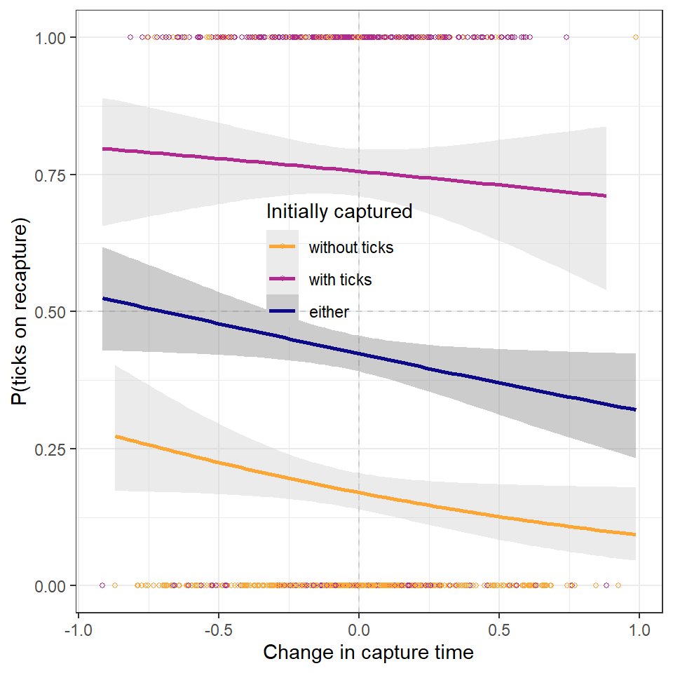
But that relationship is not significant (accounting for year, site, event, and individual as random effects). The only factor that strongly predicts whether a recapture has a tick is if the initial capture had a tick:
library(lmerTest)
tick_time_fm <- glmer(
attachStatus ~ cap_time_change * initial_status +
(1|year) + (1|siteID) + (1|eventID) + (1|tagID),
data = cap_tick_tab %>%
filter(cap_num > 1, tickStage == "any") %>%
mutate(
attachStatus = as.numeric(attachStatus),
initial_status = as.numeric(initial_status)
)
)
# fixed effects
summary(tick_time_fm)$coefficients## Estimate Std. Error t value
## (Intercept) 0.23379777 0.05661918 4.1293034
## cap_time_change -0.06106975 0.04911302 -1.2434533
## initial_status 0.41365525 0.02981975 13.8718541
## cap_time_change:initial_status 0.07067464 0.07943176 0.8897528## Groups Name Std.Dev.
## tagID (Intercept) 0.088320
## eventID (Intercept) 0.128300
## siteID (Intercept) 0.130992
## year (Intercept) 0.034498
## Residual 0.351196## Analysis of Deviance Table (Type II Wald chisquare tests)
##
## Response: attachStatus
## Chisq Df Pr(>Chisq)
## cap_time_change 0.7849 1 0.3756
## initial_status 191.9700 1 <2e-16 ***
## cap_time_change:initial_status 0.7917 1 0.3736
## ---
## Signif. codes: 0 '***' 0.001 '**' 0.01 '*' 0.05 '.' 0.1 ' ' 1And if we only look at those that started without ticks, the effect is still nonsignificant:
upd <- update(
tick_time_fm, . ~ . - initial_status - cap_time_change:initial_status,
data = cap_tick_tab %>%
filter(cap_num > 1, tickStage == "any", !initial_status) %>%
mutate(
attachStatus = as.numeric(attachStatus),
initial_status = as.numeric(initial_status)
)
)
car::Anova(upd)## Analysis of Deviance Table (Type II Wald chisquare tests)
##
## Response: attachStatus
## Chisq Df Pr(>Chisq)
## cap_time_change 1.9019 1 0.1679Is tick status (and the change thereof) associated with change in relative capture timing?